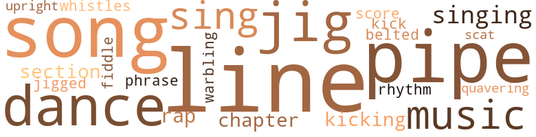
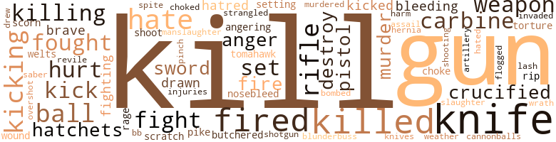
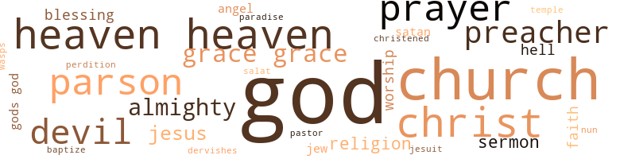

From Heaven, by Sanford, John B. ()
49 music-related terms matched in this text.
Most frequent terms in this topic: line (6); song (3); jig (3); singing (3); sing (3)
belt_out.v.01
Definition: sing loudly and forcefully
| word | sentence |
|---|---|
| belted | " If that was me this afternoon , Dan , " Platt said , " I 'd of belted Bishop to death . " |
chapter.n.01
Definition: a subdivision of a written work; usually numbered and titled
| word | sentence |
|---|---|
| chapter | what about reading my one book a hundred times and knowing all its lies by a chapter and verse ? |
| chapter | " I will read to you now , " he said , " from the Fifth Book of Moses , chapter 22 , verses 28 and 29 . . . . ' If a man find a damsel that is a virgin , which is not betrothed , and lay hold on her , and lie with her , and they be found , then the man that lay with her shall give unto the damsel 's father fifty shekels of silver , and she shall be his wife . . . " He looked at the words as if they had spoken of themselves , as if he were hearing them announce for the first time the meaning of their rigid combinations , and suddenly his face shrank , and he spat down at the book . |
dance.n.01
Definition: an artistic form of nonverbal communication
| word | sentence |
|---|---|
| dance | I did n't see even one movie , and I did n't go to a single dance down in the town with the other young girls and fellows . |
| dance | Met him at a dance . |
dance.v.03
Definition: skip, leap, or move up and down or sideways
| word | sentence |
|---|---|
| dance | do they dance ? |
jig.n.01
Definition: music in three-four time for dancing a jig
| word | sentence |
|---|---|
| jig | The day was forbidden time , and the one-way roads led straight back across the muddy Chickahominy : two footprints in the dust , and the jig was up , and up , too , if there was fire or the ash of fire , if the absence of a fowl was proved by a feather , if fruits were picked and the wet cores found , if a fish was eaten , and a single fin remained , if shadows moved when there was no moving wind , if a branch was broken , or if a rumor thrashed from bush to bush , or if silent water splashed . |
| jig | The man 's face cropped up everywhere , surrounding Hunter like the stencilled repetitions of a wall-paper design : it covered the gravestones , and the granite cherubs wore it , and the granite urns ; it flew with the flies , and among the trembling trees it did a jack-o ' - lantern jig ; it turned with each milling flake of dust , and like a tinsel target , it bobbed on the fountain of smoke . |
| jig | In the warming day , several townsmen were waiting for the first mail from Lake George , some on the jig - saw railing , some in chairs tilted against the wall , and one , Doc Slocum , on the steps leading to the road . |
jig.v.01
Definition: dance a quick dance with leaping and kicking motions
| word | sentence |
|---|---|
| jigged | The boy jigged the fist of grapes on his palm . |
kick.v.04
Definition: kick a leg up
| word | sentence |
|---|---|
| kick | Why should I kick her out ? " |
| Kicking | Kicking aside the kerosene tins , Hunter dragged the fallen bell to the burial-ground and slung it by its yoke between two stones standing back to back . |
| Kicking | " Kicking that same woman out in the rain ! " |
music.n.01
Definition: an artistic form of auditory communication incorporating instrumental or vocal tones in a structured and continuous manner
| word | sentence |
|---|---|
| music | I tell you of the danger not because I 'm brave and making small of it ; I simply want to speak before I die , to say that this , this , was why I showed my hand when a show of hands was made : it was not enough to sulk when sold for calico , beads , and drink , or to maim or take our lives , or to kill for the sweet favor of being killed ; it was not enough to plot rebellion , or to rebel and be smoked like a ham or shot like a pigeon ; it was not enough to get religion second-hand from some back-porch , and , praising Gawdamighty , understand that only He made only you a slave ; it was not enough to take freedom-papers after forty years in burlap and forty years of beans ; it was not enough to run away from the sad music and the sadder laughter , and own your own mouth while one acre of the South remained to nullify its voice ; and now and finally it is not enough that I return with iron if I lie on the fringe and send lead envoys in . |
| music | 1939 He said , " . . . She came out toward the middle of the dance-floor - not walking , not just walking , but flowing like a breaker - and slowly she began to flirt the carnation of her dress , a dozen knee-high skirts amber-swirling , and slowly she played them with her hips , and still slowly she played them with her groin , and then - and always faster , and now with her head too , and her hair , and her clubbing breasts - she played herself , and finally the skirts came to a boil , and in her hands the wooden shells stuttered like drum-fire as she tried to throw her fingers away , and again and again she pounded her heels and always harder , and long gray combs of dust sprang from between the floor - boards , and then the music slashed up to one last tearing jerking tin-can smash , the woman 's body cake-walking in the after-twitches of a mechanical jigger running down . |
| music | There were night-sounds now in the dwindling rain : leaves saying leaves , leaves ; the amusement of water among stones ; the stuttered utterance of swaying wood ; and , run through once , the wood-wind music of a distant thrush . |
phrase.n.02
Definition: a short musical passage
| word | sentence |
|---|---|
| phrase | There were uneven footsteps on wood , gravel , grass , and dirt , and on the dirt , with an occasional tattered phrase , they diminished downhill and were gone . |
pipe.n.04
Definition: a tubular wind instrument
| word | sentence |
|---|---|
| pipes | You 'll look simple about those deaths at sea , and if you blink , say it was sun in your eyes , and your grub was good , and there was plenty , and it 's the lie of all lies you 've ever heard that we picked a different woman every night and lined up stewed for a crack at her wagon - we 're Dutchmen , you understand , Dutch gents , and before we jump a lady we ask permission ; you wo n't talk about the welts on your back , you 're stumped by those galls and open sores ( change of climate , maybe , or too much salt ) , and the man that squawks that we had the pox , he goes to starboard , and his fries go to port ; and , finally , nobody asked you to come along : we was trading , see , minding our own business , and the first thing we knew you 'd stowed away ; we was on the beach , see , setting by a fire , and some of us was running off at the mouth about Virginia . . . Mulberry , walnut , ash , elm , oak , and cypress : enough for a new mast in every ship afloat , enough for a new Amsterdam and one for Sunday , enough for a new outhouse in every backyard , enough for new shoes on every pair of feet , and where feet are missing , for wooden legs , enough for crutches for a race of cripples , handles for hatchets , and cradles for guns , beds for every man that sleeps on the ground , tables to sit at , and a chair for every rump , pipes and flag-poles , horse-collars and canes , wood enough for wooden whistles , wood to burn , more wood , man , than you can shake a stick at ! |
| pipe | With the point of a pen-knife , Polk nagged at a splinter in the palm of his hand ; Polhemus watched the air comb smoke from the bowl of his pipe ; Bishop , sitting hump-backed the wrong way of a chair , rubbed his chin on the back of it . |
| pipe | Aaron Platt had brought a pipe and a one-pound jar of Prince Albert , and Dan Hunter 's gift was a black silk four-in-hand with a pat - tern of American flags . |
| pipe | He brought a match off his heel like an uppercut , but before touching it to his pipe , he looked at Platt and Hunter , their faces saffron in the flare . |
rap.n.05
Definition: genre of African-American music of the 1980s and 1990s in which rhyming lyrics are chanted to a musical accompaniment; several forms of rap have emerged
| word | sentence |
|---|---|
| rap | They stood in a circle around Slocum Quinn , holding up their fists for her to rap at each syllable of her mumbo-jumbo . |
| rap | It sort of swings in when I rap it , and I see there ai n't nobody living there . |
rhythm.n.04
Definition: the arrangement of spoken words alternating stressed and unstressed elements
| word | sentence |
|---|---|
| rhythm | Then once more the rhythm went to pieces . |
scat.n.01
Definition: singing jazz; the singer substitutes nonsense syllables for the words of the song and tries to sound like a musical instrument
| word | sentence |
|---|---|
| scat | Several rows ahead of Doc Slocum , who had taken a scat on the last bench in the left section , the celluloid collar worn by Emerson Polhemus supported a cornice of withered neck . |
score.n.02
Definition: a written form of a musical composition; parts for different instruments appear on separate staves on large pages
| word | sentence |
|---|---|
| score | What about evening the score ? |
section.n.01
Definition: a self-contained part of a larger composition (written or musical)
| word | sentence |
|---|---|
| section | With talk free , the gathering would have looked like a section of spectators much too early for a parade , but there was little sound except for the stomp of a hoof on gravel , an occasional greeting , and once a scries of barks suddenly begun and suddenly ended . |
| section | Several rows ahead of Doc Slocum , who had taken a scat on the last bench in the left section , the celluloid collar worn by Emerson Polhemus supported a cornice of withered neck . |
sing.v.02
Definition: produce tones with the voice
| word | sentence |
|---|---|
| sing | ' Now , get up into those trees and sing like birds ! ' |
| sing | he shouted ; ' Climb higher and sing like birds ! ' |
| singing | If he tries that song again before we land , he 'll find himself singing it from both ends : while I 'm the Admiral , I 'll set the course , and while Pinzon 's under me , he 'll follow it . |
singing.n.01
Definition: the act of singing vocal music
| word | sentence |
|---|---|
| singing | ' No more singing , ' he said ; ' It 's too sad . |
| singing | THURSDAY , 20TH OF SEPTEMBER This was a day on wings , a day of birds : two boobies found us out among the weeds , and a third , and then a bird we took by hand , a swimmer , a river-bird with mittened feet , and land-birds , two or three , came singing , and again , at evening , a second alcatraz . |
song.n.01
Definition: a short musical composition with words
| word | sentence |
|---|---|
| song | the Officer said , and after the girls had climbed in among the leaves , he waited for the song . |
| song | A thin little song came float - ing down , and then many thin little songs , and all of them together were hardly enough to reach the ground . |
| songs | A thin little song came float - ing down , and then many thin little songs , and all of them together were hardly enough to reach the ground . |
| song | If he tries that song again before we land , he 'll find himself singing it from both ends : while I 'm the Admiral , I 'll set the course , and while Pinzon 's under me , he 'll follow it . |
tune.n.01
Definition: a succession of notes forming a distinctive sequence
| word | sentence |
|---|---|
| line | Using a live minnow and casting with a made-over trout-pole , he stripped several coils of line and slung his bait across the channel . |
| line | The boy struck , but he struck early , and the head-half of the minnow sprang back at him with the relinquished line . |
| line | Deployed in a hollow square at the edge of the high square throat , a line of cross-stitches sprawled like rifle - men . |
| line | AT BIGELOW VROOM 's Deployed in a hollow square at the edge of the high square throat , a line of cross-stitches sprawled like riflemen , but the square had been broken , and the rifle - men were dead . |
| line | He was looking downward when it slid through the cone of his vision , but he did not follow it , nor did he notice the dust on his shoes or , on one of the toe-caps , a mold of ash flourishing in a culture of kerosene : the gun , the ground , the sunlit facets of glassy gravel , these and all other things were vague fill-in around the only fact in focus - a line of cross-stitch encircling a sleeve . |
| line | " You 're getting your tail over a line for nothing , Gracie . " |
upright.n.02
Definition: a piano with a vertical sounding board
| word | sentence |
|---|---|
| upright | They heard him : mounted on the rounder stones , upright in the grass aisles , squatting on their boot-heels , shoring up their wagons , straddling the limbs of trees , stiff-legged , cross-legged , spread-legged , sitting , stand - ing , lying down , and leaning : they heard him . |
violin.n.01
Definition: bowed stringed instrument that is the highest member of the violin family; this instrument has four strings and a hollow body and an unfretted fingerboard and is played with a bow
| word | sentence |
|---|---|
| fiddle | They was looking at Peabody , and all he could do was fiddle with his hands . |
warble.v.01
Definition: sing or play with trills, alternating with the half note above or below
| word | sentence |
|---|---|
| quavering | If I 'm not , I 'll be a long time dying , and , dead , I 'll be lying not in some frugal loaf of earth for quavering pilgrims to vault the bulge I make and sink salt flavoring to my skull - Jesus , no ! |
whistle.n.01
Definition: the sound made by something moving rapidly or by steam coming out of a small aperture
| word | sentence |
|---|---|
| whistles | You 'll look simple about those deaths at sea , and if you blink , say it was sun in your eyes , and your grub was good , and there was plenty , and it 's the lie of all lies you 've ever heard that we picked a different woman every night and lined up stewed for a crack at her wagon - we 're Dutchmen , you understand , Dutch gents , and before we jump a lady we ask permission ; you wo n't talk about the welts on your back , you 're stumped by those galls and open sores ( change of climate , maybe , or too much salt ) , and the man that squawks that we had the pox , he goes to starboard , and his fries go to port ; and , finally , nobody asked you to come along : we was trading , see , minding our own business , and the first thing we knew you 'd stowed away ; we was on the beach , see , setting by a fire , and some of us was running off at the mouth about Virginia . . . Mulberry , walnut , ash , elm , oak , and cypress : enough for a new mast in every ship afloat , enough for a new Amsterdam and one for Sunday , enough for a new outhouse in every backyard , enough for new shoes on every pair of feet , and where feet are missing , for wooden legs , enough for crutches for a race of cripples , handles for hatchets , and cradles for guns , beds for every man that sleeps on the ground , tables to sit at , and a chair for every rump , pipes and flag-poles , horse-collars and canes , wood enough for wooden whistles , wood to burn , more wood , man , than you can shake a stick at ! |
whistle.v.05
Definition: make a whining, ringing, or whistling sound
| word | sentence |
|---|---|
| sing | The third shot would crack the spine and sing off it at an angle to slug a hole in a pot and drop , spent , into a marsh of hominy . |
yodel.v.01
Definition: sing by changing register; sing by yodeling
| word | sentence |
|---|---|
| warbling | The water was still high , a yard-wide spill of it warbling down a staircase of boulders to flatten , here and there , into pools disturbed only by the transit of reflected clouds , by the trespass of an occasional bird that drank , bathed , and went away . |
175 violence-related terms matched in this text.
Most frequent terms in this topic: kill (20); knife (12); gun (12); killed (8); fired (7)
abrasion.n.01
Definition: an abraded area where the skin is torn or worn off
| word | sentence |
|---|---|
| scratch | We accuse you of making a League with the Devil , giving you the power of Levitation and Estoppel : I 'm a-driving my cart past his house one day ( which if he built it any closer to the road , he 'd he living acrost the way from himself ) , and my huh lays a scratch alongside his wall . |
anger.n.01
Definition: a strong emotion; a feeling that is oriented toward some real or supposed grievance
| word | sentence |
|---|---|
| anger | Why , being savages inconstant in everie thing but what feare constraineth them to keepe , being quick to anger , craftie , and quick to run , and being so enamoured of all Ornamentations that they sporte dead Rats tied by the tail and even greene and yellow coloured snakes , which crawl and lapp and often kiss their lips , and why , being savages continually in warres and eateing their enemies when they kill them , or any stranger if they make him their prisoner , why , being savages that lick up . |
| anger | Funneled in elms , the road through Warrensburg was empty and quiet - empty except for a scratching dog , and quiet except for the undulant anger of a mile - away bell . |
anger.v.02
Definition: become angry
| word | sentence |
|---|---|
| angering | The priest addressed the converts he had made , promising Heaven if they retained their faith , thus angering the Iroquois , and to silence him they scorched him with coals from head to foot , and when ( as if they were bound and he free ) he spoke further , they cut away his lower lip , and they thrust a red-hot iron down his throat . |
attack.v.01
Definition: launch an attack or assault on; begin hostilities or start warfare with
| word | sentence |
|---|---|
| assail | And finally , if God is a man , then all of us are men , and we will not assail men for being what they are : only in private will we stone a dog , but not ever nor anywhere will we stone a looking-glass . |
bb.n.01
Definition: a small pellet fired from an air rifle or BB gun
| word | sentence |
|---|---|
| BB | Once more , this time in sing-song , someone said , " Dop-ey Ben-ny , dop-ey Ben-ny . . . , " and the boy clapped a hand up to the bee-sting of a BB on the back of his head . |
bleeding.n.01
Definition: the flow of blood from a ruptured blood vessel
| word | sentence |
|---|---|
| bleeding | " Dopey Marvin , " he said , and suddenly he slapped the fallen boy 's face with the bleeding piece of himself . |
| bleeding | Piper grabbed the long knotted dangle of rein from behind him and cut across Quinn 's head with it as if it were a saber - across and back , across and back - and four broils appeared on the schoolmaster 's face , one of them broken open and bleeding . |
blunderbuss.n.01
Definition: a short musket of wide bore with a flared muzzle
| word | sentence |
|---|---|
| blunderbuss | Flintlock , blunderbuss , and carbine had run them for three hundred years , from the Ches - apeake flats , from the Catskill highlands , from the dunes of Kitty Hawk , from the Okeechobee swamps , and then cannonballs and promises had ferried them to the plains , and then Gold - and their backs were to the wall . |
bombard.v.02
Definition: throw bombs at or attack with bombs
| word | sentence |
|---|---|
| bombed | He left the vineyard , bombed by grapes of rain that burst upon him night , day , and again night , and he bucked in rain the grape-shot Rappahannock to reach some hole in the ground , some haystack , and the Potomac in rain , six rain-tufted miles to stand ( to soak ) in sand warmer than the rain , and the Patuxent ( Maryland ) in a plague of rain that pocked the mud and then pocked the pocks - a week of rain , a water-week to the Chesapeake sun , then sun and navy-blue night to the Severn . |
butcher.v.01
Definition: kill (animals) usually for food consumption
| word | sentence |
|---|---|
| butchered | " Me , I fed up to Ash Harned 's , " Estes said , " and I got a slab from a pork I 'd swear was butchered for the Civil War and fried for the Spanish-American . " |
cannonball.n.01
Definition: a solid projectile that in former times was fired from a cannon
| word | sentence |
|---|---|
| cannonballs | Flintlock , blunderbuss , and carbine had run them for three hundred years , from the Ches - apeake flats , from the Catskill highlands , from the dunes of Kitty Hawk , from the Okeechobee swamps , and then cannonballs and promises had ferried them to the plains , and then Gold - and their backs were to the wall . |
carbine.n.01
Definition: light automatic rifle
| word | sentence |
|---|---|
| carbine | But the word calendar had stayed with the old man , and now as he put the carbine down across his knees and picked at a scale of rust on the trigger-guard , he said , " I guess I wo n't have to write for no calendar this year . |
| carbine | Flintlock , blunderbuss , and carbine had run them for three hundred years , from the Ches - apeake flats , from the Catskill highlands , from the dunes of Kitty Hawk , from the Okeechobee swamps , and then cannonballs and promises had ferried them to the plains , and then Gold - and their backs were to the wall . |
| carbine | When the sun sets by the clock , I 'll take off blue rags queerly faded to gray , and give away my Colt and my condemned carbine and wearing what I wore when I enlisted ( rags ) , I 'll be crawling between two pickets into Dixie . |
contemn.v.01
Definition: look down on with disdain
| word | sentence |
|---|---|
| scorn | I said ( and there was others there to hear me ) , I said , " Man , I could n't keep that rain off me except I grew more feathers than a duck 's behind " and all he said was , " I scorn to be drabbled ! " |
crucify.v.01
Definition: kill by nailing onto a cross
| word | sentence |
|---|---|
| crucified | You ca n't stand by picking your teeth while I 'm being crucified ! " |
| crucified | As she passed the first of the parked cars , a man crucified to the spare tire dropped a comet of brown spit near her feet , and then , as more cars and more people were left behind , a droning swarm of whispers rose . |
destroy.v.04
Definition: put (an animal) to death
| word | sentence |
|---|---|
| destroy | Shortly after , God pleased ( in our extremity ) to move the Indians to bring us some Corne , when we rather expected they would destroy us , capt. wingfield : . . . Capt. Smith is a liar . |
| destroy | capt. smith : . . . God pleased ( in our extremity ) to move the Indians to bring us some Corne , when we rather expected they would destroy us . |
draw.v.23
Definition: pull (a person) apart with four horses tied to his extremities, so as to execute him
| word | sentence |
|---|---|
| drawn | The road , deserted before , was hardly crowded now , yet even in the pie-slice of vision limited by Mansfield 's window , several cars and one-horse rigs were drawn up along the fringe of the pavement , and here and there a driver or a passenger had climbed down to lean back against a wheel or a fender , and here and there too a townsman had come up to join them in their silence . |
| drawn | It was Saturday evening , and drawn up in front of the store was a rank of cars , trucks , wagons , and one - horse rigs from outlying parts of the township . |
| drew | Tunny-fish were seen , and a boatswain-bird , and the men drew up a bucket of sea-water , and , tonguing it , found it to be less salt . |
fight.n.02
Definition: the act of fighting; any contest or struggle
| word | sentence |
|---|---|
| fighting | I 'll go out fighting and faunching . " |
fight.n.05
Definition: a boxing or wrestling match
| word | sentence |
|---|---|
| fight | d ) You ask me , he could spare the Big Casino : he swore he 'd rip out my privities and bowels if I so much as made a move or opened my facey but I fooled him - I did n't put up any fight . |
| fight | The fight was short . |
fight.v.02
Definition: fight against or resist strongly
| word | sentence |
|---|---|
| fought | We wrote , " We find that pictures are invaluable in bringing about conversions among the Hurons ; we have learned that these holy representations are half the battle to be fought against them . |
| fought | Piper fought them to a stop , and then , anchoring them with the plow-point , he galled their rumps and stifles until they turned , their ears flat , and tried to climb him , and he was giving them whang-leather across the muzzles when Bishop took him by the switching-arm and hauled him off . |
| fought | And they closed , and from the start , from four hun - dred years before the start , both fought to kill : four hundred years of plundering and systematic murder to retain were fighting four hundred years of retreat and headlong dying to repossess . |
| fighting | And they closed , and from the start , from four hun - dred years before the start , both fought to kill : four hundred years of plundering and systematic murder to retain were fighting four hundred years of retreat and headlong dying to repossess . |
| fight | " He 's got a right to drownd himself too , only I never seen him fight for it . " |
flog.v.01
Definition: beat severely with a whip or rod
| word | sentence |
|---|---|
| flogged | Quitting the road for an overgrown path , Hunter flogged his way into a catch-as-catch-can of underbrush that grappled him with every branch , twig , and leaf . |
fury.n.01
Definition: a feeling of intense anger
| word | sentence |
|---|---|
| rage | We desire some more showing souls in perdition , and if you sent a few drawn on paper or canvas , with three , four , or even five tormenting devils visiting different punishments on the damned , one with pincers , another applying fire , etc. , they would have a lasting effect on the savages , especially if the drawings were made distinct , if they revealed misery and rage and despair written on the ( red ) faces of the condemned . " |
gag.v.06
Definition: cause to retch or choke
| word | sentence |
|---|---|
| choke | We accuse you of having the Markings of a Witch ( Hidden Teats , sunken Flesh , and Webbed Feet ) , and using them to reverse the course of Nature : It was raining pitchforks with the tines down , and it was no good walking unless you had fins , but that did n't stop him coming in dry as a bone and slapping dust off himself fit to choke you . |
| choked | Piper murdered him with his eyes : he walked up to him with a 12-gauge shotgun and blew both of his lungs out through his back ; he shoved a bowie into his navel and opened him as if he were entering a tent ; he choked him until his tongue hung like that of a pistoled horse . |
gun.n.01
Definition: a weapon that discharges a missile at high velocity (especially from a metal tube or barrel)
| word | sentence |
|---|---|
| guns | We greeted you with gifts when you came ashore ( not the Indian kind - your kind : permanent ) , but seeing our weapons ( did n't you have guns ? ) |
| guns | " They do shoot - only not with guns . " |
| guns | You 'll look simple about those deaths at sea , and if you blink , say it was sun in your eyes , and your grub was good , and there was plenty , and it 's the lie of all lies you 've ever heard that we picked a different woman every night and lined up stewed for a crack at her wagon - we 're Dutchmen , you understand , Dutch gents , and before we jump a lady we ask permission ; you wo n't talk about the welts on your back , you 're stumped by those galls and open sores ( change of climate , maybe , or too much salt ) , and the man that squawks that we had the pox , he goes to starboard , and his fries go to port ; and , finally , nobody asked you to come along : we was trading , see , minding our own business , and the first thing we knew you 'd stowed away ; we was on the beach , see , setting by a fire , and some of us was running off at the mouth about Virginia . . . Mulberry , walnut , ash , elm , oak , and cypress : enough for a new mast in every ship afloat , enough for a new Amsterdam and one for Sunday , enough for a new outhouse in every backyard , enough for new shoes on every pair of feet , and where feet are missing , for wooden legs , enough for crutches for a race of cripples , handles for hatchets , and cradles for guns , beds for every man that sleeps on the ground , tables to sit at , and a chair for every rump , pipes and flag-poles , horse-collars and canes , wood enough for wooden whistles , wood to burn , more wood , man , than you can shake a stick at ! |
| gun | ... In Virginia they 've got a fruit they call the putchamin , green at first , then yellow , and finally red , and when red , ripe , ripe as a woman 's nipple ( I 've tasted both , and it 's as true as God ) , and if you like cherries , you lie on your back while the wind feeds you ox-hearts from the trees , and for wine there 's a grape named Messaminne , or , better than the Malaga , the scuppernong , and April strawberries , and the raspise fruit , a little nothing that sweetens up the gullet like a deep whiff from a snootful of flowers , and purslin , and sorrel , and pellitory of Spain , and the tuckahoe root , and the musquaspenne , and sasafrage , and chinquapin , and tobacco ... In Virginia they 've got a critter they call an Aroughcun , a tree-climbing beggar , a second-story beast ( pronounced raccoon ) , but sweet when roasted , and they have another that sticks to the ribs , the Assapanick , a squirrel flying like a bird , and the Opassom ( cat , rat , and swine in one ) that plays dead while they club it to death , and the water Mussascus , poison on the plate , but money in the jug , an ounce for an ounce , because its smell is stronger than the smell of any lady that wears it , and the Beares , it is said , are similar to those of Muscovia , and there are Deare too , and Hares and Conies , and Otters , Martins , Powlecats , and Weessels , and Minkes as well , and the silver-sided Fox , and here only lives the Beaver , the water-dog , but stump-legged , a sort of navigating udder with a tail for a rudder as bare as a racket : all these , also the Vetchunquoye , all these ... In Virginia they 've got a Blackbird with red epaulettes , and the fisherman Osperaye , a flying harpoon , and the Lanaret , harrying like a bounding ball , stooping , striking , muffing , trying it again through the ruffled dust , and the Goshawke , an iron hook on iron wings that has your kill before the smoke from your gun clears away , and the Falcon , the projectile that returns to sit your arm for another round of killing , and the Eagle , the greatest devourer of all ( What did you say ? |
| gun | We accuse you of irregular Strength in Lifting and such other and prodigious Pranks and Feats as only a Diabolical Assistance would explain : I seen him grab a gun with a six-foot bar ' l ( I could n't of budged it with block and fall ) and hold it at arm 's - end like it was a pistol , and once he took that self-same fowling-piece ( it weighed ten stone if it weighed ten ounces ) , and just by sticking his thumb in the muzzle , he twirled it overhead like I 'd do with a hat . |
| gun | Let them be armed , let them have a gun to spare , and powder , and let them share flints and lead , let one of them surrender up a pair of drawers , let them all embrace him , let them kiss his face , let them break bread and marvel at his hunger and shake their heads ; make their bread shrink and their smiles expand ; make them make him eat , and make them make sandals for his broken feet ; let them let him rest himself and tell his story of the man in the black coat , and let them match this Tory with another , but with a coat of red ; and let him let himself be led across the Charles to a patch of ground , a mound called Bunker Hill and there , bound by the words , " Do n't fire until you . |
| gun | " And if the shots miss , and the gun comes apart , I 'll still have another thirty years to brain you from behind some bush . " |
| gun | Vroom took his right hand from the pocket of his coat , and as he pointed the fat black finger of the gun - barrel at Piper 's belly , his thumb threw the safety , and he said , " You can come in now , Jerry . " |
| gun | The woman picked up the gun and , saying nothing , started for the hallway . |
| gun | The woman , still kneeling , would turn the gun upon herself and long look at her handful of power and steel judgment , long look before a smile broke her broken face , and then she would kiss the gun on the mouth and turn it back upon Bishop . |
| gun | The woman , still kneeling , would turn the gun upon herself and long look at her handful of power and steel judgment , long look before a smile broke her broken face , and then she would kiss the gun on the mouth and turn it back upon Bishop . |
| gun | " Put that gun down , nigger ! " |
| gun | She tossed the gun into neutral ground , and it rode roughly on its side to stop near the feet of Sheriff Smead . |
| gun | He was looking downward when it slid through the cone of his vision , but he did not follow it , nor did he notice the dust on his shoes or , on one of the toe-caps , a mold of ash flourishing in a culture of kerosene : the gun , the ground , the sunlit facets of glassy gravel , these and all other things were vague fill-in around the only fact in focus - a line of cross-stitch encircling a sleeve . |
| gun | He went toward the woman , avoiding the gun and avoiding too a worn-out and unmarked little mound , and he put his hand on the torn dress , saying , as he ran a finger over the brown and green and dry-blood embroidery , " I 'm sorry it got spoiled . |
hate.n.01
Definition: the emotion of intense dislike; a feeling of dislike so strong that it demands action
| word | sentence |
|---|---|
| hate | " I sure hate to see one of the town bachelors taking up with a nigger . " |
| hatred | " I do n't like your smell , " the woman said , and the words were words from the composite memory and the accrued hatred of her race . |
| hatred | " No princes of the wilderness of Sinai , " he said , and he talked as if to peopled benches in a church still stand - ing , " no princes are those that come now with gifts before the Lord : no Nahshon and Nethaneel with a silver charger full of a fine flour mingled with oil , but Emerson Polhemus and Sam Pirie with brass ; no Eliab and Elizur with a silver bowl , but Joel Confrey and Edom Smead with hatred ; no Shelumiel and Eliasaph with a golden spoon of incense , but Herbert Estes and Leland Polk with greed ; no Elishama and Gamaliel with a young bullock , but Ash Harned and Mark Lomax with wrath ; no Abidan and Ahiezer with a first - year lamb , but Arthur Hustis and Abel French with vanity ; no Pagiel and Ahira with a kid of the goats , but Jerome Piper with coal-oil and lust ; and Eli Bishop with Death ! |
hate.v.01
Definition: dislike intensely; feel antipathy or aversion towards
| word | sentence |
|---|---|
| hate | " I 'd hate to feel I overstayed my welcome . " |
| hate | " The women in this town , " Cleo said , " they hate this America Smith because they 've got to thinking that Dan Hunter 's their own special man and married to every last one of them . |
| hate | You hate Anna Mae because when your husband laid with her , she turned out to be just another woman to you . " |
| hate | So , bub , if you got anything to say for yourself before you get fried in deep fat like a cruller , if you got a prayer to make or a bribe to offer , if you know you 're damned , but want to be saved , if you 'll say ' Uncle ' and eat a snootful of crow , if you 'll love me while I hate the sight of you , if you 'll kiss my foot while it tromps your face , if you 'll believe I 'm good , and only man is evil , if you 'll believe I 'm God and believe on your knees , then bow down ! |
| hated | You hated him , and you wanted him to die . |
hernia.n.01
Definition: rupture in smooth muscle tissue through which a bodily structure protrudes
| word | sentence |
|---|---|
| hernia | " Hell , Doc , " he said , " I got this hernia from raising prices , and do n't ever think I did n't . " |
hurt.v.04
Definition: cause damage or affect negatively
| word | sentence |
|---|---|
| hurt | You had to get hit if you wanted to eat ; you had to learn how to take a grazer down the side of your head and not be hurt any more than when you put your hat on ; but knowing nothing about the tricks of dodging and slapping the canvas and making believe he was groggy , knowing only that he had to get hit one hun - dred and twenty times in sixty minutes , my father just put his head through that hole and let them pitch away . |
injury.n.01
Definition: any physical damage to the body caused by violence or accident or fracture etc.
| word | sentence |
|---|---|
| injuries | , and the Elk ( Little and Big ) , and the Brandywine on the dandelion , on dung itself , and a dead dog ( he 's yellow , you understand , yard-wide yellow , and if they ever caught him , he 'd call it quits after a go that only cost him a pair of arms and a few minor injuries - one of them death ) , and the Delaware to Jersey , and Rancocas Creek , and up the creek on cranberries ( up for fair ) , and on cranberry-cramps to the sand-struck pines , and then down the old sea-floor sand to the sea on nothing but the southeast wind ( from Africa ) , and now north in night to wade the Toms and wait , with toes for bait , to daw some clawing crab , and north on Manasquan clams , on sea-pickled fruit on shore-bird eggs , on fish-fins and fish-bones from an osprey nest , on fish from osprey young , on swamp-salt , swamp-water , and pistache slime , north on what hands could lift and stomach hold : and he was on the Hudson , on the Hudson palisade ! |
| harm | " I never worked you any harm , Steve . " |
invade.v.01
Definition: march aggressively into another's territory by military force for the purposes of conquest and occupation
| word | sentence |
|---|---|
| invaded | They flailed him from face to foot ; they whipped his throat , clutched his armpits , and invaded his crotch ; and then , when he had passed on , they bushwhacked him from behind . |
kick.v.04
Definition: kick a leg up
| word | sentence |
|---|---|
| kick | Why should I kick her out ? " |
| Kicking | Kicking aside the kerosene tins , Hunter dragged the fallen bell to the burial-ground and slung it by its yoke between two stones standing back to back . |
| Kicking | " Kicking that same woman out in the rain ! " |
kick_back.v.02
Definition: spring back, as from a forceful thrust
| word | sentence |
|---|---|
| kick | " Seems the town wanted Dan Hunter to kick out some nigger-woman . . . . " Half a glass of warm milk hit the attendant in the face . |
| kick | People forget he was a no-good son-of-a-bitch to his brother , but they remember he was never seen to kick a dog - and , by God , before you know it , he 's got defenders . |
| kicking | " Please to meet you , " Platt said , " but you might as well know right off that Leland Polk 's the kind of a man that I would n't help him if he was kicking in a ditch . " |
| kicking | FRIDAY , 7TH OF SEPTEMBER They swam out to us today , still laughing , they prodded the dead air with dirty jokes , and they swam back , kicking up a galling wake : the crews were much amused by the horse-play . |
| kicked | " Who kicked who out in the rain ? " |
| kicked | " Do n't ever think I kicked her out , " Polk said . |
kill.v.10
Definition: cause the death of, without intention
| word | sentence |
|---|---|
| kill | Why , being savages inconstant in everie thing but what feare constraineth them to keepe , being quick to anger , craftie , and quick to run , and being so enamoured of all Ornamentations that they sporte dead Rats tied by the tail and even greene and yellow coloured snakes , which crawl and lapp and often kiss their lips , and why , being savages continually in warres and eateing their enemies when they kill them , or any stranger if they make him their prisoner , why , being savages that lick up . |
| kill | " The kind you preachers carry could n't kill a flea in seventeen thousand years . |
| kill | " I 'll kill you , Eli . " |
| killed | If he 's an enemy , let your chief eat his heart , but if he 's an Oke , you 've killed yourselves unless you burn tobacco and invite him down . |
| kill | Burn 'em , and you 'd kill mosquitoes . " |
| killing | I 'm walking in the woods , and I run across a house I ai n't never saw before , and being killing thirsty , I go up to the door and give it a knock . |
| killed | But there were still some medals that Custer had not won , and there were still some commissions that he had not earned , and the Sioux were the only enemy the white man had on the continent , the only enemy to take the field , the only enemy to be killed for those medals and commissions - and Custer knew that . |
| kill | It hit his temple , burst , and sidled down across his eyes , but before this and while the degradation was on its way , at some instant between the giving and the taking , between the dispatch and the delivery , Aben 's one-sixteenth of Abenaki was try - ing to kill . |
| kill | see the whites of their eyes , " let him kill . |
| kill | " I 'm going to kill that little Indian shitepoke ! |
| kill | Watch me , and see if I do n't kill him ! " |
| killing | " That was a long jump from killing him . " |
| killed | " Do I think I killed Tom ? " he said as he lit the spill . |
| kill | " You kill a man , " Slocum said , " and he sprouts wings before he 's hard . |
| kill | I would n't kill Eli , but along with four-five others , I 'd lay for him some night when he was coming home from a hunk of Lake George ginch , and I 'd scare him all to smack . " |
| kill | To kill ! |
| kill | Why do we always want to kill ? " |
| kill | " You ca n't kill a man for talking , and so far that 's all Eli 's done . |
| killed | given in or killed him ? |
| kill | When I picked up that whip , I meant to kill him , and he knew it . " |
| kill | " If you meant to kill him , you 'd have done it with two hands , ten fingers , and six quarts of hot blood . |
| kill | " Am I supposed to kill because God does ? " |
| kill | I tell you of the danger not because I 'm brave and making small of it ; I simply want to speak before I die , to say that this , this , was why I showed my hand when a show of hands was made : it was not enough to sulk when sold for calico , beads , and drink , or to maim or take our lives , or to kill for the sweet favor of being killed ; it was not enough to plot rebellion , or to rebel and be smoked like a ham or shot like a pigeon ; it was not enough to get religion second-hand from some back-porch , and , praising Gawdamighty , understand that only He made only you a slave ; it was not enough to take freedom-papers after forty years in burlap and forty years of beans ; it was not enough to run away from the sad music and the sadder laughter , and own your own mouth while one acre of the South remained to nullify its voice ; and now and finally it is not enough that I return with iron if I lie on the fringe and send lead envoys in . |
| killed | I tell you of the danger not because I 'm brave and making small of it ; I simply want to speak before I die , to say that this , this , was why I showed my hand when a show of hands was made : it was not enough to sulk when sold for calico , beads , and drink , or to maim or take our lives , or to kill for the sweet favor of being killed ; it was not enough to plot rebellion , or to rebel and be smoked like a ham or shot like a pigeon ; it was not enough to get religion second-hand from some back-porch , and , praising Gawdamighty , understand that only He made only you a slave ; it was not enough to take freedom-papers after forty years in burlap and forty years of beans ; it was not enough to run away from the sad music and the sadder laughter , and own your own mouth while one acre of the South remained to nullify its voice ; and now and finally it is not enough that I return with iron if I lie on the fringe and send lead envoys in . |
| kill | And they closed , and from the start , from four hun - dred years before the start , both fought to kill : four hundred years of plundering and systematic murder to retain were fighting four hundred years of retreat and headlong dying to repossess . |
| kill | " You 'll kill her some day . " |
| killed | THURSDAY , 27TH OF SEPTEMBER We made seventy miles , but counted sixty , and the men took it staring , saying nothing , and when the dorados came , the gilded fish , they killed them quietly , as if for practice . |
| killed | They killed you up in that hole , Trubee ! |
| killed | Trubee , they damn well killed you ! " |
killing.n.02
Definition: the act of terminating a life
| word | sentence |
|---|---|
| kill | ... In Virginia they 've got a fruit they call the putchamin , green at first , then yellow , and finally red , and when red , ripe , ripe as a woman 's nipple ( I 've tasted both , and it 's as true as God ) , and if you like cherries , you lie on your back while the wind feeds you ox-hearts from the trees , and for wine there 's a grape named Messaminne , or , better than the Malaga , the scuppernong , and April strawberries , and the raspise fruit , a little nothing that sweetens up the gullet like a deep whiff from a snootful of flowers , and purslin , and sorrel , and pellitory of Spain , and the tuckahoe root , and the musquaspenne , and sasafrage , and chinquapin , and tobacco ... In Virginia they 've got a critter they call an Aroughcun , a tree-climbing beggar , a second-story beast ( pronounced raccoon ) , but sweet when roasted , and they have another that sticks to the ribs , the Assapanick , a squirrel flying like a bird , and the Opassom ( cat , rat , and swine in one ) that plays dead while they club it to death , and the water Mussascus , poison on the plate , but money in the jug , an ounce for an ounce , because its smell is stronger than the smell of any lady that wears it , and the Beares , it is said , are similar to those of Muscovia , and there are Deare too , and Hares and Conies , and Otters , Martins , Powlecats , and Weessels , and Minkes as well , and the silver-sided Fox , and here only lives the Beaver , the water-dog , but stump-legged , a sort of navigating udder with a tail for a rudder as bare as a racket : all these , also the Vetchunquoye , all these ... In Virginia they 've got a Blackbird with red epaulettes , and the fisherman Osperaye , a flying harpoon , and the Lanaret , harrying like a bounding ball , stooping , striking , muffing , trying it again through the ruffled dust , and the Goshawke , an iron hook on iron wings that has your kill before the smoke from your gun clears away , and the Falcon , the projectile that returns to sit your arm for another round of killing , and the Eagle , the greatest devourer of all ( What did you say ? |
| killing | ... In Virginia they 've got a fruit they call the putchamin , green at first , then yellow , and finally red , and when red , ripe , ripe as a woman 's nipple ( I 've tasted both , and it 's as true as God ) , and if you like cherries , you lie on your back while the wind feeds you ox-hearts from the trees , and for wine there 's a grape named Messaminne , or , better than the Malaga , the scuppernong , and April strawberries , and the raspise fruit , a little nothing that sweetens up the gullet like a deep whiff from a snootful of flowers , and purslin , and sorrel , and pellitory of Spain , and the tuckahoe root , and the musquaspenne , and sasafrage , and chinquapin , and tobacco ... In Virginia they 've got a critter they call an Aroughcun , a tree-climbing beggar , a second-story beast ( pronounced raccoon ) , but sweet when roasted , and they have another that sticks to the ribs , the Assapanick , a squirrel flying like a bird , and the Opassom ( cat , rat , and swine in one ) that plays dead while they club it to death , and the water Mussascus , poison on the plate , but money in the jug , an ounce for an ounce , because its smell is stronger than the smell of any lady that wears it , and the Beares , it is said , are similar to those of Muscovia , and there are Deare too , and Hares and Conies , and Otters , Martins , Powlecats , and Weessels , and Minkes as well , and the silver-sided Fox , and here only lives the Beaver , the water-dog , but stump-legged , a sort of navigating udder with a tail for a rudder as bare as a racket : all these , also the Vetchunquoye , all these ... In Virginia they 've got a Blackbird with red epaulettes , and the fisherman Osperaye , a flying harpoon , and the Lanaret , harrying like a bounding ball , stooping , striking , muffing , trying it again through the ruffled dust , and the Goshawke , an iron hook on iron wings that has your kill before the smoke from your gun clears away , and the Falcon , the projectile that returns to sit your arm for another round of killing , and the Eagle , the greatest devourer of all ( What did you say ? |
knife.n.02
Definition: a weapon with a handle and blade with a sharp point
| word | sentence |
|---|---|
| knife | " Drop that knife ! " |
| knife | Holding the scalp up as if it were a notice , he nailed it home on the knife with an overhand plunge that sank the blade clear through the cork and into the plaster of the wall . |
| knife | " A knife , " Quinn said . |
| knife | " Took a knife to my Marv ! " |
| knife | " A knife ! |
| knife | Took a knife ! " |
| knife | " A knife ! |
| knife | God damn it , a knife ] " " That 's right - a knife , " Bishop said , " but whose knife ? " |
| knife | God damn it , a knife ] " " That 's right - a knife , " Bishop said , " but whose knife ? " |
| knife | God damn it , a knife ] " " That 's right - a knife , " Bishop said , " but whose knife ? " |
| knife | " He used a knife on my Marvin ! " |
| knife | Why did you let God start the whole machinery of Heaven when all you had to do was open a knife ? " |
| knives | From now on , I 've got my back to the wall : the men are quiet , but knives have tongues . |
malice.n.01
Definition: feeling a need to see others suffer
| word | sentence |
|---|---|
| spite | I could live a extra fifty years on spite alone . " |
manslaughter.n.01
Definition: homicide without malice aforethought
| word | sentence |
|---|---|
| manslaughter | JOEL CONFREY AND TRUBEE PELL " Trubee , " Confrey said , " for a man that put in sev - enteen years at Dannemora for manslaughter , you sure act peculiar . " |
murder.n.01
Definition: unlawful premeditated killing of a human being by a human being
| word | sentence |
|---|---|
| murder | Then , suddenly forgetting the murder , he sat up in the grass and bit off a piece of the candy . |
| murder | And they closed , and from the start , from four hun - dred years before the start , both fought to kill : four hundred years of plundering and systematic murder to retain were fighting four hundred years of retreat and headlong dying to repossess . |
murder.v.01
Definition: kill intentionally and with premeditation
| word | sentence |
|---|---|
| murdered | Piper murdered him with his eyes : he walked up to him with a 12-gauge shotgun and blew both of his lungs out through his back ; he shoved a bowie into his navel and opened him as if he were entering a tent ; he choked him until his tongue hung like that of a pistoled horse . |
musket_ball.n.01
Definition: a solid projectile that is shot by a musket
| word | sentence |
|---|---|
| balls | He made the dollar letting people throw base - balls at his head , collecting one dime for every dozen rockets that bounced off his skull . |
| ball | A miner in Wilkes-Barre caught him after his sight had gone bad , and hitting him square on the top of his head , the ball dug a dent that it actu - ally stuck in for a second . |
| ball | All we own is this ball of mud we live on , and even though most of it 's so poor you could n't raise a rumpus on it with a keg of liquor , we aim to make it do the best it can while we 're around to see it - and if some bastard gets in our way when God 's out , then it 's up to the rest of us to play God till God gets back . |
| ball | Bishop blew a tadpole of foaming spit over the rail - ing and watched it ball up in the dirt . |
nosebleed.n.01
Definition: bleeding from the nose
| word | sentence |
|---|---|
| nosebleed | One : I took the nosebleed after that argument , and there would n't nothing stop it but prayer . |
open_fire.v.01
Definition: start firing a weapon
| word | sentence |
|---|---|
| fired | and then Pickhouse ( some said Piggase ) died , and then a big name , quite a piece of cheese , judging from the many volleys of small shot they fired over his grave : Bartholomew Gosnold , That night each of us had his say and said it , and in all but one , pity ran second to hunger . |
| fired | For fifteen years , he earned a living avoiding death loaded , aimed , and fired at the rate of six shots for a nickel . |
| fire | The South said , ' The Consatution is only a roll of paper , and we will tear off the part we do n't like , ' so they opened fire on Fort Sumter . . . " Aben is a red-skin son-of-an-lndian-bitch , " some - one said . |
| fired | And when the last shot was fired , when the smoke had cleared away , when the Indians had gone , and the sun was going down , Custer stank as he rotted among other rotting corpses on the upshot ground of the valley of the Little Big Horn . . . . " " Why do n't you walk over there and soak him one , Marv ? " |
| fire | Let them be armed , let them have a gun to spare , and powder , and let them share flints and lead , let one of them surrender up a pair of drawers , let them all embrace him , let them kiss his face , let them break bread and marvel at his hunger and shake their heads ; make their bread shrink and their smiles expand ; make them make him eat , and make them make sandals for his broken feet ; let them let him rest himself and tell his story of the man in the black coat , and let them match this Tory with another , but with a coat of red ; and let him let himself be led across the Charles to a patch of ground , a mound called Bunker Hill and there , bound by the words , " Do n't fire until you . |
| fired | The fourth shot , fired with both hands from both knees , would hit a pelvic hollow and flip the body half over , and the fifth , sixth , and seventh shots would geld it . |
| fired | " Being people made in the image of God , or being Gods made after the likeness of dogs , w ' e will root and itch and sleep and rut : we will hole up in a haystack when not even our hair can stand on end , and thence - forward , from baldness to baldness , from early in the morning till late in the afternoon , we will lust to be chambering , and we will find provision for the flesh though we must seek it in the hollow of our hand , though we must pay money for it or marry it . . . . " And now he looked upon the face that he had been speaking to by speaking to all the other faces - Eli Bishop 's - and as he watched , as the others too turned to watch , Bishop stopped one of his nostrils with a thumb and fired an acrobat of mucus over a nearby grave . |
| fired | The Soldiers raised their rifles and fired into the trees . |
| fired | In the distance , a single shot was fired , the sound coming downwind diminished , like the chug of an axe . |
overshoot.v.01
Definition: shoot beyond or over (a target)
| word | sentence |
|---|---|
| overshot | The sun still overshot the pond-hollow , which lay in the shade like a warm dish cooling , but soon the rising steam would dwindle to lint and then to nothing , and the water , sun-struck , would be a clean perforation in the body of the earth . |
pain.v.02
Definition: cause emotional anguish or make miserable
| word | sentence |
|---|---|
| hurt | " I ai n't going to hurt you . " |
| hurt | You 'll hurt yourself . " |
pike.n.04
Definition: medieval weapon consisting of a spearhead attached to a long pole or pikestaff; superseded by the bayonet
| word | sentence |
|---|---|
| pike | All but one of his congregation were in their pews , and the one - Doc Slocum - had just limped into sight on the path leading up from the Warrensburg pike to the churchyard on Number Four Pond . |
pinch.n.02
Definition: an injury resulting from getting some body part squeezed
| word | sentence |
|---|---|
| pinch | I got to be light-fingered about ground , Mister , I got so I 'd steal it by the pinch , like tobacco , I 'd never walk the road but what I loaded my hat , and once in a while , to stuff some special crack , I 'd even rake it under the fence from a neighbor , and thanks to such thievery , and also the wind , I 'd only come middle-age ( meaning thirty , Mister ) when I actually had me a crust onto that quarry that 'd keep my seed from dribbling down to hell . |
pistol.n.01
Definition: a firearm that is held and fired with one hand
| word | sentence |
|---|---|
| pistol | We accuse you of irregular Strength in Lifting and such other and prodigious Pranks and Feats as only a Diabolical Assistance would explain : I seen him grab a gun with a six-foot bar ' l ( I could n't of budged it with block and fall ) and hold it at arm 's - end like it was a pistol , and once he took that self-same fowling-piece ( it weighed ten stone if it weighed ten ounces ) , and just by sticking his thumb in the muzzle , he twirled it overhead like I 'd do with a hat . |
| pistols | A boy rose from his desk and stared over Quinn 's head at a lithograph of Custer and his men firing horse - pistols into a merry-go-round of Indians . |
rifle.n.01
Definition: a shoulder firearm with a long barrel and a rifled bore
| word | sentence |
|---|---|
| rifle | From a canvas case , Slocum drew an old and rusted rifle . |
| rifle | Deployed in a hollow square at the edge of the high square throat , a line of cross-stitches sprawled like rifle - men . |
| rifle | AT BIGELOW VROOM 's Deployed in a hollow square at the edge of the high square throat , a line of cross-stitches sprawled like riflemen , but the square had been broken , and the rifle - men were dead . |
| rifles | The Soldiers raised their rifles and fired into the trees . |
rip.v.04
Definition: criticize or abuse strongly and violently
| word | sentence |
|---|---|
| rip | d ) You ask me , he could spare the Big Casino : he swore he 'd rip out my privities and bowels if I so much as made a move or opened my facey but I fooled him - I did n't put up any fight . |
saber.n.01
Definition: a fencing sword with a v-shaped blade and a slightly curved handle
| word | sentence |
|---|---|
| saber | Piper grabbed the long knotted dangle of rein from behind him and cut across Quinn 's head with it as if it were a saber - across and back , across and back - and four broils appeared on the schoolmaster 's face , one of them broken open and bleeding . |
shoot.v.02
Definition: kill by firing a missile
| word | sentence |
|---|---|
| shoot | But the Lincolns never shoot , they only get shot at , and my father died still looking for that white face . |
shooting.n.02
Definition: killing someone by gunfire
| word | sentence |
|---|---|
| shooting | Because shooting 's about the best fun there is . " |
shotgun.n.01
Definition: firearm that is a double-barreled smoothbore shoulder weapon for firing shot at short ranges
| word | sentence |
|---|---|
| shotgun | Piper murdered him with his eyes : he walked up to him with a 12-gauge shotgun and blew both of his lungs out through his back ; he shoved a bowie into his navel and opened him as if he were entering a tent ; he choked him until his tongue hung like that of a pistoled horse . |
sic.v.01
Definition: urge to attack someone
| word | sentence |
|---|---|
| setting | I stowed my can of worms in a shady place and went up to where Shreve was setting on the porch in sock feet and looking out across as nice a five hundred acres as ever laid outdoors . |
| set | SELMA FRENCH b. 1892 - " Night after night , " she said , " it 's like he 's trying to bury himself , like he 's a dog digging a hole for a bone , but I 'm forty-nine years old , Doc , forty-nine years old , and there 's things the matter inside of me , and I ca n't bring myself to tell him because he 's got his heart set on being a father , and he might run me out in the road if he knew I could n't have a baby , and I love him , Doc , and I do n't want him to be mad at me , so please help me , Doc , please do something , please give me a medicine to put in his coffee so he wo n't be plowing over tired old ground every night , every night , every night ! |
| set | " If people was eggs , you could n't find the bird that 'd set on 'em . " |
| set | He picked up an egg - beater that Abe Novinsky had set on the counter . |
slaughter.n.03
Definition: the savage and excessive killing of many people
| word | sentence |
|---|---|
| Slaughter | Five times removed from one of those twenty Negars , all his life a Virginian , yet knowing of Virginia only what he could know by looking over a fence , twenty-seven years old , yet never having lived so much as one day that he could call his own ( but older than all things old beyond that fence because of the endless adolescence of the slave ) , unlettered from a to z , including the letter X , six foot even , and thirteen stone ( including hat ) , colored like new-turned earth , condition prime , and cash-value , on the hoof , two hundred pounds - he greased one night , he took it at the double , and when , hat in hand , the man in the black coat spoke from the driveway up to the pillared porch , saying , " I never would of figgered he 'd run , suh ; he did n't look to me like the biggety kind , suh , " the man on the porch ( was it Slaughter or Pickett , was it Penhallow , Cabell , Ambler , or Randolph ? ) |
strangle.v.01
Definition: kill by squeezing the throat of so as to cut off the air
| word | sentence |
|---|---|
| strangled | I got swamped in gumbo or strangled in powder , but I misrecall having the right kind of a rain . |
sword.n.01
Definition: a cutting or thrusting weapon that has a long metal blade and a hilt with a hand guard
| word | sentence |
|---|---|
| sword | The fire 's creeping and crawling around the edges , with three shifts of devils to huff and puff it , and Old Scratch in person is licking on his chops , and me , bub , I got a sword hanging over your head sharp enough to slice water without getting wet . |
| sword | I 'm listening , bub , and if you 're all done ranting , I want to say I honed such a blade on this sword that you wo n't ever know you 've been cut in half till you start walking in two different directions . |
tomahawk.n.01
Definition: weapon consisting of a fighting ax; used by North American Indians
| word | sentence |
|---|---|
| hatchets | You 'll look simple about those deaths at sea , and if you blink , say it was sun in your eyes , and your grub was good , and there was plenty , and it 's the lie of all lies you 've ever heard that we picked a different woman every night and lined up stewed for a crack at her wagon - we 're Dutchmen , you understand , Dutch gents , and before we jump a lady we ask permission ; you wo n't talk about the welts on your back , you 're stumped by those galls and open sores ( change of climate , maybe , or too much salt ) , and the man that squawks that we had the pox , he goes to starboard , and his fries go to port ; and , finally , nobody asked you to come along : we was trading , see , minding our own business , and the first thing we knew you 'd stowed away ; we was on the beach , see , setting by a fire , and some of us was running off at the mouth about Virginia . . . Mulberry , walnut , ash , elm , oak , and cypress : enough for a new mast in every ship afloat , enough for a new Amsterdam and one for Sunday , enough for a new outhouse in every backyard , enough for new shoes on every pair of feet , and where feet are missing , for wooden legs , enough for crutches for a race of cripples , handles for hatchets , and cradles for guns , beds for every man that sleeps on the ground , tables to sit at , and a chair for every rump , pipes and flag-poles , horse-collars and canes , wood enough for wooden whistles , wood to burn , more wood , man , than you can shake a stick at ! |
| tomahawk | Clamped in his teeth he held a tomahawk , and smearing one of his cheeks was its red and sticky blade . |
| hatchets | Naked under his cassock of pitch-soaked bark , Lalemant fell to his knees , saying these words after the sainted Paul : " We are made a spectacle unto the world , and to angels , and to men ! " whereupon the red devils put fire to the bark , and Lalemant blazed up like a canoe on a beach , but the only sound from Brébeuf was an " Ave. " Frenzied , they made him a collar of hatchets , heated till they smoked like stones from hell , and hung it around his neck to smoke out fear , but he was grateful , as if they had healed him , as if it were proud flesh they had burned away , and he gave them a prayer in payment for pain . |
torment.v.01
Definition: torment emotionally or mentally
| word | sentence |
|---|---|
| torture | His mouth made no words now , nor uttered pain , and they tried a subtler means to overcome him , for they took it to be an augury of disaster if torture failed : they brought forth Lalemant , that Brébeuf might see his agony and cry aloud for his brother in Christ if not for himself . |
vilify.v.01
Definition: spread negative information about
| word | sentence |
|---|---|
| revile | " ' Blessed are ye , when men shall revile you , and perse - cute you , and shall say all manner of evil against you falsely . ' " |
wale.n.01
Definition: a raised mark on the skin (as produced by the blow of a whip); characteristic of many allergic reactions
| word | sentence |
|---|---|
| welts | You 'll look simple about those deaths at sea , and if you blink , say it was sun in your eyes , and your grub was good , and there was plenty , and it 's the lie of all lies you 've ever heard that we picked a different woman every night and lined up stewed for a crack at her wagon - we 're Dutchmen , you understand , Dutch gents , and before we jump a lady we ask permission ; you wo n't talk about the welts on your back , you 're stumped by those galls and open sores ( change of climate , maybe , or too much salt ) , and the man that squawks that we had the pox , he goes to starboard , and his fries go to port ; and , finally , nobody asked you to come along : we was trading , see , minding our own business , and the first thing we knew you 'd stowed away ; we was on the beach , see , setting by a fire , and some of us was running off at the mouth about Virginia . . . Mulberry , walnut , ash , elm , oak , and cypress : enough for a new mast in every ship afloat , enough for a new Amsterdam and one for Sunday , enough for a new outhouse in every backyard , enough for new shoes on every pair of feet , and where feet are missing , for wooden legs , enough for crutches for a race of cripples , handles for hatchets , and cradles for guns , beds for every man that sleeps on the ground , tables to sit at , and a chair for every rump , pipes and flag-poles , horse-collars and canes , wood enough for wooden whistles , wood to burn , more wood , man , than you can shake a stick at ! |
weapon.n.01
Definition: any instrument or instrumentality used in fighting or hunting
| word | sentence |
|---|---|
| weapons | We greeted you with gifts when you came ashore ( not the Indian kind - your kind : permanent ) , but seeing our weapons ( did n't you have guns ? ) |
| weapon | " A mouth is a dangerous weapon . |
| weapon | And now slowly , with no leaf rustling , with no joint cracking , with no breath passing in or out , with the patient and supremely silent craft of the woods - man , the boy raised his weapon , a cherry lollipop , and split the skull of his enemy - nothing . |
weapon.n.02
Definition: a means of persuading or arguing
| word | sentence |
|---|---|
| artillery | He took up the stump of the clapper-rope and jerked it once , as if it were the lanyard of a piece of artillery : a corrugated bronze bash lumbered off into the woods , ricocheting from tree to tree until it was lost . |
weather.v.01
Definition: face and withstand with courage
| word | sentence |
|---|---|
| weather | And when all of that three-ring plague was fed , and when it was n't weather that brung up bile , what about Indians with bellies full of fire ? |
| brave | I tell you of the danger not because I 'm brave and making small of it ; I simply want to speak before I die , to say that this , this , was why I showed my hand when a show of hands was made : it was not enough to sulk when sold for calico , beads , and drink , or to maim or take our lives , or to kill for the sweet favor of being killed ; it was not enough to plot rebellion , or to rebel and be smoked like a ham or shot like a pigeon ; it was not enough to get religion second-hand from some back-porch , and , praising Gawdamighty , understand that only He made only you a slave ; it was not enough to take freedom-papers after forty years in burlap and forty years of beans ; it was not enough to run away from the sad music and the sadder laughter , and own your own mouth while one acre of the South remained to nullify its voice ; and now and finally it is not enough that I return with iron if I lie on the fringe and send lead envoys in . |
| brave | WEDNESDAY , 5TH OF SEPTEMBER The crews are brave again and big with brag : a month on land to forget the water future , and in work and wine they 've forgotten it , forgotten it or faked it till the day came . |
whip.v.04
Definition: strike as if by whipping
| word | sentence |
|---|---|
| lash | He held the lash down as he walked toward Piper , saying , " A fool 's lips enter into conten - tion , and his mouth calleth for strokes . ' " |
wound.n.01
Definition: an injury to living tissue (especially an injury involving a cut or break in the skin)
| word | sentence |
|---|---|
| wound | ( . . . To remove an arrow , break the tail clean and pull the shaft straight through the wound . |
wrath.n.01
Definition: intense anger (usually on an epic scale)
| word | sentence |
|---|---|
| wrath | " No princes of the wilderness of Sinai , " he said , and he talked as if to peopled benches in a church still stand - ing , " no princes are those that come now with gifts before the Lord : no Nahshon and Nethaneel with a silver charger full of a fine flour mingled with oil , but Emerson Polhemus and Sam Pirie with brass ; no Eliab and Elizur with a silver bowl , but Joel Confrey and Edom Smead with hatred ; no Shelumiel and Eliasaph with a golden spoon of incense , but Herbert Estes and Leland Polk with greed ; no Elishama and Gamaliel with a young bullock , but Ash Harned and Mark Lomax with wrath ; no Abidan and Ahiezer with a first - year lamb , but Arthur Hustis and Abel French with vanity ; no Pagiel and Ahira with a kid of the goats , but Jerome Piper with coal-oil and lust ; and Eli Bishop with Death ! |
283 religion-related terms matched in this text.
Most frequent terms in this topic: God (96); church (32); Heaven (26); Grace (16); Christ (14)
baptize.v.01
Definition: administer baptism to
| word | sentence |
|---|---|
| baptize | Then they poured boiling water over his head , saying that the Iroquois too knew how to pay , that their hot water was for the Jesuit cold : " Now we baptize you , Black-robe , " they cried , " that you may be happy in your white Heaven ! " and they tore strips from his limbs and body and devoured this unholy food before his eyes , saying , " The more a man suffers on the earth ( so you say ) , the happier he will be in Heaven , and desiring to make you the happiest of all , we torment you badly because we love you well . " |
| christened | He listened , and the talk was of one christened . . . let it be Pomp ( for Pompey ) , let it be Zach , or , because his face was black , make it Benajah , let it be Crispus , Bristol , Titus , Tack , or Dan , let it be Brittain or Jordan , Hallam or Epheram , let it be a juggled name in a grape-vine legend , let it be a name smuggled from the Chickahominy , let it be letter after letter , spelling ' slave , ' but let these in this twisting mist be friends . |
blessing.n.05
Definition: the act of praying for divine protection
| word | sentence |
|---|---|
| blessing | But he sanctified their feast with a blessing , and they scalped him and laid open his breast , and they came in a crowd to drink his blood , thinking thus to imbibe some part of his valor , but he was dead , and his valor was in Paradise . |
| blessing | " It is now the seventh day , " Hunter said , and his hand came away from the Bible a fist clutching an india - paper sheaf , " it is now the seventh and the sanctified day , and on this seventh day I say before God that if truly He made us in His own image , then truly in wor - shipping Him we worship ourselves : we are either Gods blessing a God , or men blessing a man , or many dogs bowing down before the King of the Beasts , but whether it be one or another , our admiration and adoring are performed for a mirror , and always will we see out of our eyes only our eyes seeing in . " |
| blessing | " It is now the seventh day , " Hunter said , and his hand came away from the Bible a fist clutching an india - paper sheaf , " it is now the seventh and the sanctified day , and on this seventh day I say before God that if truly He made us in His own image , then truly in wor - shipping Him we worship ourselves : we are either Gods blessing a God , or men blessing a man , or many dogs bowing down before the King of the Beasts , but whether it be one or another , our admiration and adoring are performed for a mirror , and always will we see out of our eyes only our eyes seeing in . " |
church.n.02
Definition: a place for public (especially Christian) worship
| word | sentence |
|---|---|
| church | Daniel Hunter stood in the entry of the church , listening to the final bronze shimmers ripple from the bell-loft and crawl away on the moist morning air . |
| church | " Parson Peabody - the one from Shreve 's church . " |
| church | " They 'd run you out of your church , for one thing , " I said . |
| church | I ai n't the church here . |
| church | If you was doing it for the wife or some other relative , it 'd be a different story , but you ought to know Peabody ai n't going to have no more respect for you than he did for his church . |
| church | " Well , anyhow , when the congregation found out about him being so pore , we chipped in and built him that nice little house over by the church . " |
| church | I had to do the house every day , and the cooking too , and in be - tween times I had to take care of the church , polishing the wood , sweeping out , washing all the windows . |
| church | " Maybe twice a year , " the girl said , " and then only to something going on around the church . |
| church | " Well , I put in a full day at the house , " the girl said , " and on top of that , there was a meeting at the church in the afternoon , and I had to tidy it up when I was done doing the supper dishes , so when I was leav - ing the parsonage to go home , I was tireder than usu - ally . |
| church | " How could you forget your church , your position , your wife and chil - dren ? |
| church | " We call it looking out for the church . " |
| church | " You 're in church . |
| church | " She can still go to church . " |
| church | " Because if she stays , the church goes . " |
| church | " Sure , but if the church goes , who goes with it ? " |
| church | " If the church goes , who goes with it ? " |
| church | By whaling on your old man and horsing in church , you gummed up two of my best commandments , bub . |
| church | " We met in church , " Hannah Harned said . |
| church | " Coming to church , Doc ? " |
| church | Motionless in a saucer of sky , a small white church should have floated bottom-side up - a small bright box of a building , a belfried cube , a house of blocks and prisms put together by a child - but the church was gone , body , belfry , porch , and all , and floating in its place , and bottom-side up , was a rubble of ash , brick , and plaster . |
| church | " No princes of the wilderness of Sinai , " he said , and he talked as if to peopled benches in a church still stand - ing , " no princes are those that come now with gifts before the Lord : no Nahshon and Nethaneel with a silver charger full of a fine flour mingled with oil , but Emerson Polhemus and Sam Pirie with brass ; no Eliab and Elizur with a silver bowl , but Joel Confrey and Edom Smead with hatred ; no Shelumiel and Eliasaph with a golden spoon of incense , but Herbert Estes and Leland Polk with greed ; no Elishama and Gamaliel with a young bullock , but Ash Harned and Mark Lomax with wrath ; no Abidan and Ahiezer with a first - year lamb , but Arthur Hustis and Abel French with vanity ; no Pagiel and Ahira with a kid of the goats , but Jerome Piper with coal-oil and lust ; and Eli Bishop with Death ! |
| church | Nor will we blame our - selves for pulling down the tabernacle , for if God is a God , then we too are Gods , and surely God will bring such a church as ours into the dust . |
| church | " That 's when I come to your church . " |
| church | The church was silent now : no shoes scraped , and no voices whispered . |
| church | " If the town ever seen that woman up to the par - sonage , Dan 'd have to find himself a round church so 's the Devil could n't corner him . " |
| church | Beyond , hanging against its chest like a lavaliere , was a small white church . |
| church | " A hell of a time to come to church . " |
church.n.04
Definition: the body of people who attend or belong to a particular local church
| word | sentence |
|---|---|
| church | The last to leave the church were America Smith and Dan Hunter , and addressed by none in passing , they greeted none , but in their wake a foam of conversation rose to the surface of the quiet . |
| church | " The church is up the hill , " Hunter said . |
| church | " The church is wherever the preacher is , " Polhemus said . |
| Church | We accuse you of Rebellion against the Church : a ) He said death is sure , but tithes are surer . |
| church | Motionless in a saucer of sky , a small white church should have floated bottom-side up - a small bright box of a building , a belfried cube , a house of blocks and prisms put together by a child - but the church was gone , body , belfry , porch , and all , and floating in its place , and bottom-side up , was a rubble of ash , brick , and plaster . |
| church | And then he galloped his horse away across the fields , and the Soldiers followed him , and in a few moments the late afternoon was quiet once more . . . . " " Abe , " I said , " why do you come to our church ? " |
curate.n.01
Definition: a person authorized to conduct religious worship
| word | sentence |
|---|---|
| Parson | " That is , when I could get it away from the Parson . " |
| Parson | What Parson ? " |
| Parson | " Parson Peabody - the one from Shreve 's church . " |
| Parson | Shreve did n't say nothing while the Parson was put - ting the boots to him ; he did n't even stop rocking . |
| Parson | I seen him stomp like a fiddler when a weasel got one of his pullets , and here was the devil catching the Parson 's tail , but he was n't even wooled up about it . |
| Parson | " To some shitepoke that calls himself a Parson ? |
| Parson | They 're going to hold that Parson for trial at the next session , and between now and then he 's going to ride out of here like a witch on a broom . " |
| parson | " Mrs. Peabody ever help you out around the parson - age ? " |
| Parson | I said why did n't he want to get seen , and he said people 'd talk if they knew the Parson was out at night with such a pretty girl . |
| Parson | For a couple or three seconds , Plumley stared at Pea - body like he thought he was being codded , and then when it sunk in that the Parson went and confessed , he sailed into him like he meant to tear him wheel from axle . |
| Parson | " I 'd go keep house for Parson Dan . " |
| pastor | " I 'm pastor of this bunch of witches . " |
| parson | " I thought of sitting still on the steps of the parson - age and waiting for Dan Hunter to stop rocking and stand up , but I knew that he would never stand up before God stood him , and I knew that even then he would be all talk and no hands . " |
dervish.n.01
Definition: an ascetic Muslim monk; a member of an order noted for devotional exercises involving bodily movements
| word | sentence |
|---|---|
| dervishes | The sun rebounded from the road in shivers of hot air , and starts of wind sent up dervishes of dust that spun briefly and collapsed . |
eden.n.01
Definition: any place of complete bliss and delight and peace
| word | sentence |
|---|---|
| Heaven | " I would n't wait that long for a seat in Heaven . " |
| Heaven | come to see the people from Heaven ! " |
| Heaven | That was a hundred and twenty-eight years ago , and now I say this - an Indian to other Indians , a savage to savages , and a Dogge to many Dogges : what was rumor then is rumor still and always , because if truly these are people from Heaven , why are they so God damned familiar with hell ? |
| Heaven | We said , " Unhappy infidels ( meaning Dogges ) , you that live in smoke only to die in flames , repent you and choose between Heaven and hell ! " |
| Heaven | " Which do you choose , " we said , " Heaven or hell ? " |
| Heaven | We said , " Heaven is a good place for Frenchmen . " |
| Heaven | " Which do you choose , " we said , " Heaven or hell ? " |
| Heaven | We said , " The French will not feed us in Heaven . " |
| Heaven | " Which do you choose , " we said , " Heaven or hell ? " |
| Heaven | We said , " Do they hunt in Heaven ? |
| Heaven | do they make war or hold festivals in Heaven ? |
| Heaven | " Which do you choose , " we said , " Heaven or hell ? " |
| Heaven | The priest addressed the converts he had made , promising Heaven if they retained their faith , thus angering the Iroquois , and to silence him they scorched him with coals from head to foot , and when ( as if they were bound and he free ) he spoke further , they cut away his lower lip , and they thrust a red-hot iron down his throat . |
| Heaven | Then they poured boiling water over his head , saying that the Iroquois too knew how to pay , that their hot water was for the Jesuit cold : " Now we baptize you , Black-robe , " they cried , " that you may be happy in your white Heaven ! " and they tore strips from his limbs and body and devoured this unholy food before his eyes , saying , " The more a man suffers on the earth ( so you say ) , the happier he will be in Heaven , and desiring to make you the happiest of all , we torment you badly because we love you well . " |
| Heaven | Then they poured boiling water over his head , saying that the Iroquois too knew how to pay , that their hot water was for the Jesuit cold : " Now we baptize you , Black-robe , " they cried , " that you may be happy in your white Heaven ! " and they tore strips from his limbs and body and devoured this unholy food before his eyes , saying , " The more a man suffers on the earth ( so you say ) , the happier he will be in Heaven , and desiring to make you the happiest of all , we torment you badly because we love you well . " |
| Paradise | But he sanctified their feast with a blessing , and they scalped him and laid open his breast , and they came in a crowd to drink his blood , thinking thus to imbibe some part of his valor , but he was dead , and his valor was in Paradise . |
| Heaven | We do not pretend , like the people from Heaven , that each of us is a Manitou in his own right , we do not pretend that we are more than men , and being men , we endure the illnesses of men , among which we rank the sense to know a friend . |
| Heaven | You are not our friends , you people from Heaven , you are not our friends , you that speak of God and teach the Word , the Word being " Mine ! |
| Heaven | You are no man 's friend , you traders from Heaven that offer a word and would take our world away ! |
| Heaven | Which do you choose , " we said , " Heaven or hell ? " |
| Heaven | " We choose Heaven , but not for us - for Brébeuf . |
| Heaven | He was brave , like an Indian , and in admiration we give you this gift as a shroud for his body when the time comes to send him on his journey : it is a coat of bear-skin that our women made , and in your cold Heaven it will keep him warm . " |
| Heaven | e ) He said Indians go to Heaven , and Negars too . |
| Heaven | I always been partial to the Fourth and the Fifth , being a family man myself and liking my rest-day , so when it comes to toting up your good and bad and figuring if you 're headed for Heaven or hell , you wo n't have a chance . |
| Heaven | Why did you let God start the whole machinery of Heaven when all you had to do was open a knife ? " |
| Heaven | Unspotted lambs of the Lord , come you walking righteously from the haymow of the world to the haymow of Heaven , come you with straw on your knees and straw on the backs of your camisoles ! |
| Heaven | SATURDAY , 15TH OF SEPTEMBER We ran ninety miles , but I reported less : a flame from Heaven plunged into the sea , and we had fireworks all night - below deck . |
god.n.03
Definition: a man of such superior qualities that he seems like a deity to other people
| word | sentence |
|---|---|
| God | God damn you ! |
| God | Shortly after , God pleased ( in our extremity ) to move the Indians to bring us some Corne , when we rather expected they would destroy us , capt. wingfield : . . . Capt. Smith is a liar . |
| God | man 's spittle in a barbarous fashion , like foule Dogges , whensoever a settler spits in their mouthes , why , being savages that poyson their Arrowheads and worship Oke , the Sunne , and other Devills , acknowledging neither a God nor a Resurrection , why , my people , why did we not destroy them ? |
| God | Because God calls you Dan ? " |
| God | " My people were praying before yours ever showed them how , but God 's deaf . |
| God | " Have you spit God out ? " |
| God | God 'll send you a pair - right in your face ! " |
| God | " Foolish as all hell , " Bishop said , " and this Peabody , he was just about the porest damn man of God I ever seen . |
| God | The mighty are gathering against me , not for my transgression , not for my sin , O Lord . . . . " " For God 's sake , Peabody , " Shreve said , " get to hell out of here before I change my mind ! " |
| God | " You swear to tell the truth , the whole truth , and noth - ing but the truth , so help you whatever kind of a God you worship ? " |
| God | Ai n't the fear of God tramping around in your chest ? |
| God | Why , you 've spit in God 's face ! " |
| God | " Honest to God , Doc , he has to stand up twice before you know he ai n't setting . " |
| God | God could n't have been that mean . " |
| God | That was a hundred and twenty-eight years ago , and now I say this - an Indian to other Indians , a savage to savages , and a Dogge to many Dogges : what was rumor then is rumor still and always , because if truly these are people from Heaven , why are they so God damned familiar with hell ? |
| God | We said , " We see plainly that your God is angry because we will neither believe nor obey him . |
| God | Ihonatiria , where first you taught his word , is ruined , and then you came here to Ossossané , and here too we were skeptical of your God , and now the wolves pick Ossossané 's bones , and then you went up and down our country , and from rising to setting sun you found none to do the bidding of your God and bow down , and therefore the pestilence is everywhere " We said , " Do you believe , then ? |
| God | We said , " How eager you are for a humble ' Yes , ' but we know a better cure , we know a medicine that will work more wanders than wafer or wine : we will shut you out now from all our houses and stop our ears when your God gives tongue , and then , neither hearing him nor seeing you , we will be innocent again , as before you came , and avoid the penalty of refusing to be saved . " |
| God | They led Brébeuf out and bound him to a stake , but if they hoped he would plead for his life ( for what God gave , and only God could take away ) , the red wretches were doomed to disappointment , even as they were doomed to everlasting flames . |
| God | They led Brébeuf out and bound him to a stake , but if they hoped he would plead for his life ( for what God gave , and only God could take away ) , the red wretches were doomed to disappointment , even as they were doomed to everlasting flames . |
| God | You are not our friends , you people from Heaven , you are not our friends , you that speak of God and teach the Word , the Word being " Mine ! |
| God | " When I think about it , honest to God you could n't drive a prune into me with a mallet . " |
| God | " If it ai n't , God ai n't , " Polhemus said . |
| God | e ) I wake up all at once in the dead of night , and there he is , poking about the bed-clothes ; I 'm scared pink , but anyhow I let out a holler , saying , " The whole armor of God be between us ! " and phutt ! |
| God | h ) He said if he was Satan , he 'd want to be God . |
| God | i ) He said if he was God , he 'd want to be a man . |
| God | " By God in the sky ! " the old man said . |
| God | " Turn him out , " I said , " or , by God , this town 's going to know that I 'm not giving you shots for dia - betes ! " |
| God | " Either you or God is getting almighty personal . " |
| God | " Daddy , " I said , " you 'll see a hundred if I have to go up in person and talk God into it ! " |
| God | " Dreamt God come and put His hand on my shoul - der . " |
| God | " And now God again ? " |
| God | I ai n't played out yet by one hell of a sight : I 'm God Almighty , and I want a little respect ! |
| God | I 'm God Almighty , bub , and I want some respect ! |
| God | There they was , every known kind of mortal man : stout and lean , young and old , bald and bearded , black , white , red , yellow , buff , and patch-work , good , bad , and so-so , tight , loose , and in between , horny-handed , lily-livered , pigeon-toed , and mean , the rich and pimpled , the incestuous and devout , the master of hounds and the mistress of whoors , the running , the walking , and the standing still , the pure and fornicating , and the sick and well - there they was , bub , laying twelve-deep in grief , with enough left over to make me an extra world , and the screeching they let out when I went by , the dying without death till the cows come home , the blood , the sores , the thirst , and the pain , it would of wrang the heart of anybody but a God . |
| God | So , bub , if you got anything to say for yourself before you get fried in deep fat like a cruller , if you got a prayer to make or a bribe to offer , if you know you 're damned , but want to be saved , if you 'll say ' Uncle ' and eat a snootful of crow , if you 'll love me while I hate the sight of you , if you 'll kiss my foot while it tromps your face , if you 'll believe I 'm good , and only man is evil , if you 'll believe I 'm God and believe on your knees , then bow down ! |
| God | God was my rock too , but if I ever prayed on Him , if I ever bent my neck except to blow my nose , if I ever salted Him with anything but hot sweat , if I ever begged Him for so little as the time , let Him take me apart at the seams , like a fowl , Mister , let Him reel me in dead as a trout-fly ! |
| God | Mister , to wear a span of bullocks down to their horns ; l worked knee-deep in rain and nose-deep in snow , I got up in the dark and corked off in the dark , and in between dark and dark , I coddled stones , I give them stick , one by one , for something greeny and by all that 's holy ( meaning a stiff upper lip ) , by God and by Jesus ( meaning only a expression ) , them stones of mine , Mister , they did come green ! |
| God | but with this God of mine , it was all or none , it was a drought or another drown-you-out flood . |
| God | I 'm God Almighty , bub , and I want a little respect ! |
| God | I 've got a God of my own , bub , and he 'd be sore . |
| God | - and finally one day I could n't stand the sight of them no more , and I yanked one away from the child and plunked it in the well , but may God take the stiffening out of me if my woman do n't turn up the next week with another of them pop - ish contraptions ! |
| God | God damn it , a knife ] " " That 's right - a knife , " Bishop said , " but whose knife ? " |
| God | " There 's every color but the one on God 's tongue , " Mansfield said , " and b ' Jibs , I 'd have it if it was on the market . " |
| God | " By God , " I said , " I 'm beginning to notice it ! " |
| God | Why did you wait five days for God to do something that you could 've done in five seconds ? |
| God | Why did you let God start the whole machinery of Heaven when all you had to do was open a knife ? " |
| God | " If God was inside of that barn for five days , He 'd of starved to death Himself . " |
| God | People forget he was a no-good son-of-a-bitch to his brother , but they remember he was never seen to kick a dog - and , by God , before you know it , he 's got defenders . |
| God | " What in God 's name should I have done ? |
| God | Should I have called on God to smite him , or should I have done it myself ? |
| God | " As far as you 're concerned , you can be as humble as God 's poor relatives , but the minute you meech for another person , I 'm ready to think sermons can be run up better by machine . " |
| God | " With the head-start God 's giving , He 'll be twelve miles back at Judgment Day . " |
| God | " God 's been doing it every day for years . " |
| God | " Think what God 's got on His conscience . " |
| God | " Am I supposed to kill because God does ? " |
| God | " I thought God was going to have a finger in it . " |
| God | All we own is this ball of mud we live on , and even though most of it 's so poor you could n't raise a rumpus on it with a keg of liquor , we aim to make it do the best it can while we 're around to see it - and if some bastard gets in our way when God 's out , then it 's up to the rest of us to play God till God gets back . |
| God | All we own is this ball of mud we live on , and even though most of it 's so poor you could n't raise a rumpus on it with a keg of liquor , we aim to make it do the best it can while we 're around to see it - and if some bastard gets in our way when God 's out , then it 's up to the rest of us to play God till God gets back . |
| God | All we own is this ball of mud we live on , and even though most of it 's so poor you could n't raise a rumpus on it with a keg of liquor , we aim to make it do the best it can while we 're around to see it - and if some bastard gets in our way when God 's out , then it 's up to the rest of us to play God till God gets back . |
| God | " Listen , Mister , " Polk said , " if God Himself come in here , He 'd try to jew me . " |
| God | " I thought of sitting still on the steps of the parson - age and waiting for Dan Hunter to stop rocking and stand up , but I knew that he would never stand up before God stood him , and I knew that even then he would be all talk and no hands . " |
| God | " I thought of kneeling down and praying a prayer for Dan 's God to stand up , but I knew that if God 's Dan was still rocking , Dan 's God would still be rocking too , and I knew that God was all talk and no hands . " |
| God | " I thought of kneeling down and praying a prayer for Dan 's God to stand up , but I knew that if God 's Dan was still rocking , Dan 's God would still be rocking too , and I knew that God was all talk and no hands . " |
| God | " I thought of kneeling down and praying a prayer for Dan 's God to stand up , but I knew that if God 's Dan was still rocking , Dan 's God would still be rocking too , and I knew that God was all talk and no hands . " |
| God | " I thought of kneeling down and praying a prayer for Dan 's God to stand up , but I knew that if God 's Dan was still rocking , Dan 's God would still be rocking too , and I knew that God was all talk and no hands . " |
| God | " Not if God Himself pimped for you ! " |
| God | " I 'll be God damned ! |
| God | " Your old lady 's been dead eighty years , not in - cluding last night - and I swear to God that was an - other eighty years . " |
| God | " Without coffee , God gives me the shakes . " |
| God | " In the First Book of Moses , called Genesis , God spoke , saying , ' I will make man in my image and after my likeness , and I will give him dominion over the fish of the sea , and over the fowl of the air , and over the cattle , and over all the earth , and over every creeping thing that creepeth upon the earth , and I will bless him and say unto him : Be fruitful , and multiply , and replenish the earth , and subdue it . ' |
| God | And so speaking , God made man , and , behold , man had been made in the image of God and after His likeness , and God was pleased , and the evening and the morning were the sixth day . |
| God | And so speaking , God made man , and , behold , man had been made in the image of God and after His likeness , and God was pleased , and the evening and the morning were the sixth day . |
| God | And so speaking , God made man , and , behold , man had been made in the image of God and after His likeness , and God was pleased , and the evening and the morning were the sixth day . |
| God | " It is now the seventh day , " Hunter said , and his hand came away from the Bible a fist clutching an india - paper sheaf , " it is now the seventh and the sanctified day , and on this seventh day I say before God that if truly He made us in His own image , then truly in wor - shipping Him we worship ourselves : we are either Gods blessing a God , or men blessing a man , or many dogs bowing down before the King of the Beasts , but whether it be one or another , our admiration and adoring are performed for a mirror , and always will we see out of our eyes only our eyes seeing in . " |
| Gods | " It is now the seventh day , " Hunter said , and his hand came away from the Bible a fist clutching an india - paper sheaf , " it is now the seventh and the sanctified day , and on this seventh day I say before God that if truly He made us in His own image , then truly in wor - shipping Him we worship ourselves : we are either Gods blessing a God , or men blessing a man , or many dogs bowing down before the King of the Beasts , but whether it be one or another , our admiration and adoring are performed for a mirror , and always will we see out of our eyes only our eyes seeing in . " |
| God | We will root and itch and sleep and rut , but if God is a dog , then we will not blame ourselves for being dogs , for dogs will do these things . |
| God | Nor will we blame our - selves for pulling down the tabernacle , for if God is a God , then we too are Gods , and surely God will bring such a church as ours into the dust . |
| Gods | Nor will we blame our - selves for pulling down the tabernacle , for if God is a God , then we too are Gods , and surely God will bring such a church as ours into the dust . |
| God | Nor will we blame our - selves for pulling down the tabernacle , for if God is a God , then we too are Gods , and surely God will bring such a church as ours into the dust . |
| God | And finally , if God is a man , then all of us are men , and we will not assail men for being what they are : only in private will we stone a dog , but not ever nor anywhere will we stone a looking-glass . |
| Gods | " Being people made in the image of God , or being Gods made after the likeness of dogs , w ' e will root and itch and sleep and rut : we will hole up in a haystack when not even our hair can stand on end , and thence - forward , from baldness to baldness , from early in the morning till late in the afternoon , we will lust to be chambering , and we will find provision for the flesh though we must seek it in the hollow of our hand , though we must pay money for it or marry it . . . . " And now he looked upon the face that he had been speaking to by speaking to all the other faces - Eli Bishop 's - and as he watched , as the others too turned to watch , Bishop stopped one of his nostrils with a thumb and fired an acrobat of mucus over a nearby grave . |
| God | " I name God for creating you . " |
| God | " You 've got something against me , and I wish to God I knew what it was . " |
| God | " He was God damned when he was alive . " |
| God | " Me and God do n't speak . " |
| God | But , no - you had to play God and let the poor bastard die without lifting a finger to hold him back . |
| God | You can lay God odds I did ! " |
| God | " I ca n't wait to see Warrensburg 's face when it reads my stone : ' Forget the Resurrection , Almighty God ; I need the sleep . |
| God | " And if the town do n't like his ways , that 's just too God damn bad for the town . " |
| God | " And the town ai n't afraid of God . |
| God | " . . . He ai n't no God damn Leland Polk . " |
| God | Damn God for pooping out when we needed Him ! |
| God | Let them rave : if there 's anything but water , if there 's land within a thousand miles of us , may God stuff me full of it , piece by piece ! |
| God | Mr. Pinzon ( the Pinta ) thanked God , kneeling , and said the Gloria for his kneeling crew , and on the Niña they shinnied up the masts for a bird 's - eye view of the island of Japan . |
| God | It would 've been hard to die needing a sign , and if God knew it , it was He that sent one : weed - some old , some fresh and wearing fruit . |
| God | Many thanks be to God for the temperate air , and for the day 's miracle , the flying-fish that came up from the sea to walk the plank . |
| God | SUNDAY , 7TH OF OCTOBER Day and night they 've searched for signs - they 've sought them in the flight of birds , in the uncommon fish and the berried weed , in the hue of the water , in the sounding-lead , in the composition of the sea-bottom sand , in the rain and the wind and the log-line lies : day and night they 've hunted clues to land , and all God could give to sailors , they 've had - or almost all , for they 've never had the dream . |
| God | We made a hundred and seventy-seven miles , but I slashed it to a hundred and forty-two : a hell of a day God picked to give us wind ! |
godhead.n.01
Definition: terms referring to the Judeo-Christian God
| word | sentence |
|---|---|
| Almighty | " Christ Almighty ! " |
| Almighty | I ai n't played out yet by one hell of a sight : I 'm God Almighty , and I want a little respect ! |
| Almighty | All the time you was busting your belt in there , he was trying to clap his main holt onto your soul , saying , " Laugh if you like , laugh your pants off , but by Myself , you 're all going clean to hell ! " saying , " You 're crows , you 're locusts on the land , you 're slugs , you 're bugs in bed , and beetles , you 're worms , and worse , you 're the cast of worms , you 're snails , you 're dung-hill flies , and ticks , and by Me Almighty , you 're all going clean to hell ! " |
| Almighty | I 'm God Almighty , bub , and I want some respect ! |
| almighty | What keeps you from dribbling is my almighty will . |
| almighty | Pretty soon it got to plaguing the almighty hell out of me - ' What 's the use in them ? ' |
| Almighty | I 'm God Almighty , bub , and I want a little respect ! |
| Almighty | " I ca n't wait to see Warrensburg 's face when it reads my stone : ' Forget the Resurrection , Almighty God ; I need the sleep . |
grace.n.05
Definition: (Greek mythology) one of three sisters who were the givers of beauty and charm; a favorite subject for sculptors
| word | sentence |
|---|---|
| Grace | America Smith had a pair of hand-made red woolen mittens , and Grace Paulhan a tasseled scarf to match . |
| Grace | Grace said . |
| Grace | Grace went to the screen-door , and through the mesh , as they came upon the porch , she said , " Today is Sunday . " |
| Grace | " Sit down , " Grace said . |
| Grace | " It 's all the same , " Grace said . |
| Grace | He was all done , Doc : I wanted him to die , and I let him die , and it was n't only account of him being married to Grace and bragging about put - ting the boots to that dance-hall whoor . |
| Grace | I had five years of that , Doc - jive years - and all the time I was thinking of Grace Tennent Paulhan ! |
| Grace | Grace said . |
| Grace | Grace came into the parlor wearing a cotton wrapper over her cotton night-gown . |
| Grace | " My name is Grace Paulhan , " she said . |
| Grace | Grace said . |
| Grace | Grace said . |
| Grace | Grace said . |
| Grace | Grace leaned against the door-jamb , listening to foot - steps going . |
| Grace | " Somebody they told her Grace ran a boarding - house . " |
| Grace | Between Polhemus and the huddle of skulls in the front pews - the back hair and the hats , the wigs and the shining scalps - three others sat un - attached : Eli Bishop , Aaron Platt , and Grace Tennent Paulhan . |
hell.n.01
Definition: any place of pain and turmoil
| word | sentence |
|---|---|
| hell | " Ask it , and to hell with you . " |
| hell | Talk like that me to scare the wadding out of me ' whenever I got a dose of hell for breaking Sunday ( meaning a psalm and a hot clout next to my jaw from a old man that knowed how to handle hands for two things only : psalm-singing and battery ) , but there come a day , Mister , when I was fifteen , and I guess the old man never seen me stripped or he would of damn well let it go at preaching : I took the cant , but I give back the buffets , I give them back with interest , a dozen for one , I beat the whey out of that old son-of-a-bitch , and if I bust my hands busting his prat crossways , he never doubled his fist again except to point . |
| hell | " Excuse me for making small of your friend , " Slo - cum said , " but I do n't think He knows what 's going on in Warrensburg , and if He does know , I do n't believe He 'll turn a hair to stop the town from shooting down to hell on a slack afternoon : He 's only got two hands , and I 'll bet my little black bag He wishes we 'd quit running to Him with every damn skinned knee and bloody nose in creation . |
hell.n.03
Definition: (Christianity) the abode of Satan and the forces of evil; where sinners suffer eternal punishment; - John Milton; ; -Dr. Johnson
| word | sentence |
|---|---|
| perdition | We desire some more showing souls in perdition , and if you sent a few drawn on paper or canvas , with three , four , or even five tormenting devils visiting different punishments on the damned , one with pincers , another applying fire , etc. , they would have a lasting effect on the savages , especially if the drawings were made distinct , if they revealed misery and rage and despair written on the ( red ) faces of the condemned . " |
jesuit.n.01
Definition: a member of the Jesuit order
| word | sentence |
|---|---|
| Jesuit | Then they poured boiling water over his head , saying that the Iroquois too knew how to pay , that their hot water was for the Jesuit cold : " Now we baptize you , Black-robe , " they cried , " that you may be happy in your white Heaven ! " and they tore strips from his limbs and body and devoured this unholy food before his eyes , saying , " The more a man suffers on the earth ( so you say ) , the happier he will be in Heaven , and desiring to make you the happiest of all , we torment you badly because we love you well . " |
jesus.n.01
Definition: a teacher and prophet born in Bethlehem and active in Nazareth; his life and sermons form the basis for Christianity (circa 4 BC - AD 29)
| word | sentence |
|---|---|
| Jesus | We caught fireflies in the darkening meadows , and threading them into on-and-off festoons , we hung them up before the altar and the Host , and they made light for God , Ghost , and Jesus while we , adoring , put the first knee on Canada . |
| Jesus | All he got from whites was the use of their earth , and he got it because he had the feet to walk it , not because some Jesus wrote him a quitclaim deed . |
| Jesus | " It would , man - just as sure as Jesus bled . |
| Jesus | It was enough for Jerome Piper and his taped-up son Marvin , for plain Miss Finch , and for Mark Lomax the believer in Jesus Christ . |
| Jesus | " I believe in Jesus Christ ! " |
| Jesus | " I think you folks celebrated the birth of Jesus Christ seventeen times while I was up in that cell on Lake Champlain . " |
jew.n.01
Definition: a person belonging to the worldwide group claiming descent from Jacob (or converted to it) and connected by cultural or religious ties
| word | sentence |
|---|---|
| Jew | " The Jew . " |
| Jew | " The Jew son-of-a-bitch : he goes too . |
messiah.n.01
Definition: any expected deliverer
| word | sentence |
|---|---|
| Christ | Far 's I know , that 's all he ate was fish , and he put enough of it away to make me wonder when in Christ he was going to squat down and lay himself some eggs . |
| Christ | His mouth made no words now , nor uttered pain , and they tried a subtler means to overcome him , for they took it to be an augury of disaster if torture failed : they brought forth Lalemant , that Brébeuf might see his agony and cry aloud for his brother in Christ if not for himself . |
| Christ | I 'm talking about my daughter - not my horse - but she 's got the heaves , and she breaks wind so 's two men ca n't hold a carpet to a keyhole , and all day long she hawks up clams of phlegm with nails and crooked pins and other hardware , and when she tries to say ' Heaven ' or ' Christ , ' her tongue crawls down its hole like a snakey but you give her ' Hell ' to chaw on , or ' Devil , ' and , b ' Jesus , she 'll talk a blue streak , saying , " That bites , but it makes me speak right well ! " |
| Christ | g ) He said all he knew about Christ was hearsay . |
| Christ | Good Christ ! " |
| Christ | " Christ Almighty ! " |
| Christ | " Ask it , Art , but for Christ 's sake , whisper ! " |
| Christ | They remembered his act alone , because his name ( if there was a name ) would have meant nothing , but if acts without names are less than nothing , call him Cato , like every second slave in pants , or let it be Mingo , Salem , Primas , Sidon , Jubil , or Corridon ( if your taste runs to fancy handles ) , or Quico , or Quaco , or Moody ( which he was not ) , or Barzillai ( meaning made of iron , which he was ) , or Cuff ( a name given in love , you understand ) , or let the name be London , for there were Londons , let it be Scipio ( major if large , minor if small ) , let it be Pete , Andy , Jim , Jack , Phil , or Bart , let it be Tom , Matt , Thad , Si , Jim again , or Jude ( aye , for Christ 's sake , let it be apostolic ! ) |
| Christ | And he , he shall wipe out his sin with fifty pieces of silver , only twenty more than Judas took to betray Christ ! |
| Christ | It was enough for Jerome Piper and his taped-up son Marvin , for plain Miss Finch , and for Mark Lomax the believer in Jesus Christ . |
| Christ | " I believe in Jesus Christ ! " |
| Christ | " Christ Himself could n't beat him out of it . " |
| Christ | Christ only knows how it came out of joint , Christ . . . ? |
| Christ | " I think you folks celebrated the birth of Jesus Christ seventeen times while I was up in that cell on Lake Champlain . " |
nun.n.01
Definition: a woman religious
| word | sentence |
|---|---|
| nun | I thought that he would listen to a preacher in a black suit and take his hat off to a nun 's black gown . |
prayer.n.01
Definition: the act of communicating with a deity (especially as a petition or in adoration or contrition or thanksgiving)
| word | sentence |
|---|---|
| prayer | " But never a prayer answered ? " |
| prayer | " Daddy , " Hunter said , " would you mind if I spoke a little prayer ? " |
| prayers | " I 'll speak my own prayers , " the old man said , and he looked up at the ceiling . |
| prayer | Naked under his cassock of pitch-soaked bark , Lalemant fell to his knees , saying these words after the sainted Paul : " We are made a spectacle unto the world , and to angels , and to men ! " whereupon the red devils put fire to the bark , and Lalemant blazed up like a canoe on a beach , but the only sound from Brébeuf was an " Ave. " Frenzied , they made him a collar of hatchets , heated till they smoked like stones from hell , and hung it around his neck to smoke out fear , but he was grateful , as if they had healed him , as if it were proud flesh they had burned away , and he gave them a prayer in payment for pain . |
| prayer | One : I took the nosebleed after that argument , and there would n't nothing stop it but prayer . |
| prayer | So , bub , if you got anything to say for yourself before you get fried in deep fat like a cruller , if you got a prayer to make or a bribe to offer , if you know you 're damned , but want to be saved , if you 'll say ' Uncle ' and eat a snootful of crow , if you 'll love me while I hate the sight of you , if you 'll kiss my foot while it tromps your face , if you 'll believe I 'm good , and only man is evil , if you 'll believe I 'm God and believe on your knees , then bow down ! |
| prayer | Father , this is our prayer . |
| prayer | " I thought of kneeling down and praying a prayer for Dan 's God to stand up , but I knew that if God 's Dan was still rocking , Dan 's God would still be rocking too , and I knew that God was all talk and no hands . " |
| prayer | No hawk veers overhead , churning the risen churns of mist , and no animal - no spurting squirrel or chipmunk at prayer - rustics the paper of outworn leaves . |
| prayer | " ' In love and wisdom hast Thou , O God , appor - tioned the lot of all Thy creatures , and we must accept with resignation whatever position Thy providence hath assigned to us , and endeavor to fulfil faithfully all the duties incident thereto . . . " " Now , there 's a prayer that weighs a pound and a half ! " |
| prayers | The men told me , and I took their word for it three days , they gave me , three whole days to say my prayers for some ground to pray on , and if , they said , no land was then in sight , they were going back - with me or without me . |
prayer.n.04
Definition: a fixed text used in praying
| word | sentence |
|---|---|
| Prayer | " We could 've brought this up short once with a salve , a psalm , or a statute , but now it 's moving too fast for the Penal Code , the Prayer Book , and the whole U. S. Pharmacopoeia rolled into one . " |
preacher.n.01
Definition: someone whose occupation is preaching the gospel
| word | sentence |
|---|---|
| preachers | " The kind you preachers carry could n't kill a flea in seventeen thousand years . |
| preacher | " Because I 'm not a preacher all the time . " |
| preacher | " The church is wherever the preacher is , " Polhemus said . |
| preacher | " When I come past Polk 's , Mister Bishop was say - ing the preacher spent half his time in a whoorhouse . " |
| preacher | Hunter watched the old man make his stiff crustacean way along the bank , twice coughing and twice spitting upon the quiet water , but as he neared the foot of the steps , the preacher went down to help him mount them , one by one , like a child . |
| Preacher | Now , bub , what 's this about you laughing out loud plumb in the middle of Preacher Edward 's sermon ? |
| preacher | " Son-of-a-bitch , " he said , " there would n't of been none of this if our preacher was n't laying up with a nigger whoor . " |
| preachers | " I warned you not to start any more stories going about preachers . " |
| preacher | I thought that he would listen to a preacher in a black suit and take his hat off to a nun 's black gown . |
| preacher | " You told me once that you was n't a preacher all the time , " he said . |
religion.n.01
Definition: a strong belief in a supernatural power or powers that control human destiny
| word | sentence |
|---|---|
| religion | They used a religion that did n't let nobody lift a finger on Saturday , and me holding with the Sunday kind , I come off with two solid days of fishing every week . " |
| faith | He said I should n't cry , and everything would come out all right if I only have faith , but I kept on crying , it seems like I just could n't stop , and finally he said he 'd drive me home in the Chevrolet . " |
| Faith | The incomprehensible mysteries of our Faith , the clock , the glass , the lens , and the mill - all this served to win the Indians ' affection . |
| faith | The priest addressed the converts he had made , promising Heaven if they retained their faith , thus angering the Iroquois , and to silence him they scorched him with coals from head to foot , and when ( as if they were bound and he free ) he spoke further , they cut away his lower lip , and they thrust a red-hot iron down his throat . |
| religion | We moved it , Mister , we moved it stone by stone , but where we dug one up , we only growed two more , and finally my old man sat back on his religion , saying , The farm 's yours , son , every acre of it , and if you work hard , you 'll strike dirt some day . |
| religion | We would like our children taught the Christian religion , as before . |
| religion | I tell you of the danger not because I 'm brave and making small of it ; I simply want to speak before I die , to say that this , this , was why I showed my hand when a show of hands was made : it was not enough to sulk when sold for calico , beads , and drink , or to maim or take our lives , or to kill for the sweet favor of being killed ; it was not enough to plot rebellion , or to rebel and be smoked like a ham or shot like a pigeon ; it was not enough to get religion second-hand from some back-porch , and , praising Gawdamighty , understand that only He made only you a slave ; it was not enough to take freedom-papers after forty years in burlap and forty years of beans ; it was not enough to run away from the sad music and the sadder laughter , and own your own mouth while one acre of the South remained to nullify its voice ; and now and finally it is not enough that I return with iron if I lie on the fringe and send lead envoys in . |
saint.n.02
Definition: person of exceptional holiness
| word | sentence |
|---|---|
| angel | I always knew you was n't any angel . " |
| angels | Naked under his cassock of pitch-soaked bark , Lalemant fell to his knees , saying these words after the sainted Paul : " We are made a spectacle unto the world , and to angels , and to men ! " whereupon the red devils put fire to the bark , and Lalemant blazed up like a canoe on a beach , but the only sound from Brébeuf was an " Ave. " Frenzied , they made him a collar of hatchets , heated till they smoked like stones from hell , and hung it around his neck to smoke out fear , but he was grateful , as if they had healed him , as if it were proud flesh they had burned away , and he gave them a prayer in payment for pain . |
salat.n.01
Definition: the second pillar of Islam is prayer; a prescribed liturgy performed five times a day (preferably in a mosque) and oriented toward Mecca
| word | sentence |
|---|---|
| salat | " And fruit salat . " |
satan.n.01
Definition: (Judeo-Christian and Islamic religions) chief spirit of evil and adversary of God; tempter of mankind; master of Hell
| word | sentence |
|---|---|
| devil | I seen him stomp like a fiddler when a weasel got one of his pullets , and here was the devil catching the Parson 's tail , but he was n't even wooled up about it . |
| devils | We desire some more showing souls in perdition , and if you sent a few drawn on paper or canvas , with three , four , or even five tormenting devils visiting different punishments on the damned , one with pincers , another applying fire , etc. , they would have a lasting effect on the savages , especially if the drawings were made distinct , if they revealed misery and rage and despair written on the ( red ) faces of the condemned . " |
| devils | Naked under his cassock of pitch-soaked bark , Lalemant fell to his knees , saying these words after the sainted Paul : " We are made a spectacle unto the world , and to angels , and to men ! " whereupon the red devils put fire to the bark , and Lalemant blazed up like a canoe on a beach , but the only sound from Brébeuf was an " Ave. " Frenzied , they made him a collar of hatchets , heated till they smoked like stones from hell , and hung it around his neck to smoke out fear , but he was grateful , as if they had healed him , as if it were proud flesh they had burned away , and he gave them a prayer in payment for pain . |
| Devil | I 'm talking about my daughter - not my horse - but she 's got the heaves , and she breaks wind so 's two men ca n't hold a carpet to a keyhole , and all day long she hawks up clams of phlegm with nails and crooked pins and other hardware , and when she tries to say ' Heaven ' or ' Christ , ' her tongue crawls down its hole like a snakey but you give her ' Hell ' to chaw on , or ' Devil , ' and , b ' Jesus , she 'll talk a blue streak , saying , " That bites , but it makes me speak right well ! " |
| Devil | We accuse you of making a League with the Devil , giving you the power of Levitation and Estoppel : I 'm a-driving my cart past his house one day ( which if he built it any closer to the road , he 'd he living acrost the way from himself ) , and my huh lays a scratch alongside his wall . |
| Satan | h ) He said if he was Satan , he 'd want to be God . |
| devils | The fire 's creeping and crawling around the edges , with three shifts of devils to huff and puff it , and Old Scratch in person is licking on his chops , and me , bub , I got a sword hanging over your head sharp enough to slice water without getting wet . |
| Satan | I 'm fresh from stringing new wire all around hell , and I seen the damnedest assortment of wiseacres that Satan ever put through a course of sprouts . |
| Devil | They do n't turn a single hair of my head , Mister , on account of after the kind of a life I 've led , there ai n't nothing in your world can feaze me - nothing , not you , Christ , the Devil , or the dark ; I 've seen everything all of you could serve up , and if I batted a eyelash , it was only at dust . |
| devil | " Belted him to death , b ' Jucks , and then made such a mush out of his carcass that the devil could n't of handled it with a fork . " |
| Devil | " If the town ever seen that woman up to the par - sonage , Dan 'd have to find himself a round church so 's the Devil could n't corner him . " |
| Devil | " Dan is n't afraid of the Devil . " |
sermon.n.02
Definition: a moralistic rebuke
| word | sentence |
|---|---|
| sermon | " What did you think of Dan 's sermon last Sunday ? " |
| sermon | Now , bub , what 's this about you laughing out loud plumb in the middle of Preacher Edward 's sermon ? |
| sermons | " As far as you 're concerned , you can be as humble as God 's poor relatives , but the minute you meech for another person , I 'm ready to think sermons can be run up better by machine . " |
| sermon | " You 're half a day early for a sermon . " |
temple.n.03
Definition: an edifice devoted to special or exalted purposes
| word | sentence |
|---|---|
| temple | It hit his temple , burst , and sidled down across his eyes , but before this and while the degradation was on its way , at some instant between the giving and the taking , between the dispatch and the delivery , Aben 's one-sixteenth of Abenaki was try - ing to kill . |
wasp.n.01
Definition: a white person of Anglo-Saxon ancestry who belongs to a Protestant denomination
| word | sentence |
|---|---|
| wasps | And when it was n't water that addled my brains , it was all the plain and fancy vermin on earth , it was rats that got fat on corrosive sublimate , it was ants that put away a cart-wheel overnight , it was nits and gnats , it was fleas and flies , it was weevils and weasels and wolves and wasps , Mister , it was every pest under the sun and moon . |
worship.n.01
Definition: the activity of worshipping
| word | sentence |
|---|---|
| worship | man 's spittle in a barbarous fashion , like foule Dogges , whensoever a settler spits in their mouthes , why , being savages that poyson their Arrowheads and worship Oke , the Sunne , and other Devills , acknowledging neither a God nor a Resurrection , why , my people , why did we not destroy them ? |
| worship | " You swear to tell the truth , the whole truth , and noth - ing but the truth , so help you whatever kind of a God you worship ? " |
| worship | " It is now the seventh day , " Hunter said , and his hand came away from the Bible a fist clutching an india - paper sheaf , " it is now the seventh and the sanctified day , and on this seventh day I say before God that if truly He made us in His own image , then truly in wor - shipping Him we worship ourselves : we are either Gods blessing a God , or men blessing a man , or many dogs bowing down before the King of the Beasts , but whether it be one or another , our admiration and adoring are performed for a mirror , and always will we see out of our eyes only our eyes seeing in . " |